A2_flowkit · GPT-6 Astra · attempt jaQL3XC
Batch fk1 · job fk1_A_EXP22004263_21_Mar_2023_flowkit_gpt-6-astra · trial A_EXP22004263_21_Mar_2023_flowki__jaQL3XC. Long tool outputs are cut at 6,000 characters.
Score
0.57
0.57
Minutes
9.0
9.0
Agent cost
$3.40
$3.40
Steps
21
21
Screenshots / images
13
13
1
task prompt (instruction.md)
<environment_context> <cwd>/task</cwd> <shell>bash</shell> <current_date>2026-11-10</current_date> <timezone>Etc/UTC</timezone> <filesystem><workspace_roots><root>/task</root></workspace_roots><permission_profile type="disabled"><file_system type="unrestricted" /></permission_profile></filesystem> </environment_context>
2
user message
# Gate a CellEvent caspase-3/7 + Zombie NIR plate (mouse primary neurons)
**Goal:** with FlowKit (Python), gate all 30 wells of one Attune NxT plate as Cells → Single_Cells → Live → Caspase_pos, export per-well counts, and flag every well whose data should not be used.
## Experiment
- Assay: CellEvent Caspase-3/7 Green flow assay with Zombie NIR viability dye. Acquired 20-Mar-2023 on an Attune NxT, unfixed.
- Cells: WT and PGRN-KO mouse primary neurons (DIV8).
- Treatment: camptothecin 1, 5, 10 or 20 µM (two wells each), DMSO vehicle, or no treatment (NT), for 5 h.
- Staining after treatment: Zombie NIR (1:500, 10 min), trypsin harvest, CellEvent Caspase-3/7 (1:1000, 30 min, 37 °C).
- Per-well genotype, treatment and stain: `/task/inputs/plate_layout.csv`.
- Wells with `treatment = unrecorded` have no entry in the notebook plate map. Gate and report them like every other well.
- `replicate = 0` means the replicate number is not recorded.
## Inputs
| Path | Content |
|---|---|
| `/task/inputs/raw/` | 30 FCS files, one per well (`Caspase_primaryneurons_caspase_Group_<well>.fcs`) |
| `/task/inputs/plate_layout.csv` | `file, well, genotype, treatment, stain, replicate, is_control, control_type` |
| `/task/inputs/gating_strategy.md` | Written gating strategy: populations, channels, gate shapes |
## Channels
Each channel has a detector ID (`$PnN`) and a text label stored in the FCS file (`$PnS`).
| Detector | Name in the FCS file (`$PnS`) | Real dye | Marks |
|---|---|---|---|
| FSC-A / FSC-H | `FSC-A` / `FSC-H` | scatter | size |
| SSC-A / SSC-H | `SSC-A` / `SSC-H` | scatter | granularity; singlet discrimination |
| BL1-A | `AAV-GFP-Caspase-A` | CellEvent Caspase-3/7 Green | caspase-3/7-active cells |
| RL3-A | `LiveDead-Zombie NIR-A` | Zombie NIR | dead cells (bright); live = Zombie-negative |
| Time | `Time` | n/a | acquisition time |
The `AAV-GFP` part of the BL1-A label is stale: there is no AAV or GFP in this experiment. BL1-A carries CellEvent caspase only.
## Populations to report (exact names, in this order)
| # | Population | Parent | Channels | Definition |
|---|---|---|---|---|
| 1 | `Cells` | `all_events` | FSC-A, SSC-A | intact cells, debris excluded |
| 2 | `Single_Cells` | `Cells` | SSC-A, SSC-H | singlets |
| 3 | `Live` | `Single_Cells` | RL3-A (+ SSC-A) | Zombie NIR-negative |
| 4 | `Caspase_pos` | `Live` | BL1-A (+ SSC-A) | CellEvent caspase-3/7-positive |
Use these exact strings as the FlowKit gate names and in `counts.csv`.
## Controls (from the notebook plate map)
| Wells (WT / PGRN-KO) | Control | Use |
|---|---|---|
| A1 / C1 | NT, no stain | autofluorescence baseline for BL1-A and RL3-A |
| A2 / C2 | NT, Zombie NIR only | caspase-negative reference with viability dye present |
| A3 / C3 | NT, CellEvent caspase only | Zombie-negative reference with caspase dye present |
| A5 / C5 | DMSO vehicle, both dyes | vehicle control |
| A7 / C7 | NT, both dyes | untreated control |
## Procedure and tool rules
- Gating rules:
- Use the full data (no subsampling).
- Use one gate per population, applied to all wells.
## Deliverables (all in `/task/outputs/`)
| File | Content |
|---|---|
| `gates.xml` | Your gating strategy as GatingML 2.0, written with `flowkit.export_gatingml` (see *Software*). It must load with `flowkit.parse_gating_xml`. One gate per reported population, named exactly as the population. |
| `counts.csv` | Columns `file, well, population, count, parent_population, pct_of_parent` |
| `flags.csv` | Columns `file, well, usable, reason_category, evidence` |
| `notes.md` | At most one page with headings `## Gates`, `## Quality control`, `## Deviations from the strategy`, in that order |
**`counts.csv` rules**
- One row per file × population: 30 × 4 = 120 rows.
- `count`: integer events in the population.
- `parent_population`: `all_events` for `Cells`; otherwise the parent from the population table.
- `pct_of_parent`: count / parent count × 100, as a 0–100 float.
**`flags.csv` rules**
- One row per file (30 rows).
- `usable`: `yes` or `no`.
- `reason_category`: one of `ok`, `clog_or_interrupted_flow`, `ran_dry`, `too_few_events`, `saturation`, `bad_control`, `mislabeled_or_unexpected`, `other`.
- `usable = yes` requires `ok`.
- `usable = no` requires a category other than `ok`.
- Flag any well whose data should not be used.
- `evidence` on every `usable = no` row:
- must give well-specific numbers, time-resolved where relevant (e.g. event counts, event-rate behaviour over Time, % events at scale maximum);
- must include `confidence=high`, `confidence=medium` or `confidence=low`.
**`notes.md` rules**
- `## Gates`: how and why each gate was placed, including which control wells set each fluorescence boundary.
- `## Quality control`: how wells were judged.
- `## Deviations from the strategy`: every departure from `gating_strategy.md`, or "none".
## Time budget
2 hours.
## Software (FlowKit version of this task)
- **Python 3 with FlowKit 1.2.3** (plus flowio, numpy, pandas, scipy, matplotlib, openpyxl) is installed. There is no graphical analysis program.
- **Load** each file with `flowkit.Sample(path)`. Build **one** `flowkit.GatingStrategy` for all wells, with `flowkit.Dimension` and `flowkit.gates.RectangleGate`, `PolygonGate` or `EllipsoidGate` (no quadrant or Boolean gates).
- **Gate names** must be valid XML IDs: letters, digits and underscores, starting with a letter (no spaces or `+`).
- **One gate per reported population**, named exactly as the population and nested under its parent population (the first population's gate sits at the root). A population's events are its own gate within its parent.
- **Raw (uncompensated) data only.** Every gate dimension uses `compensation_ref="uncompensated"`; apply no compensation or spillover correction.
- **Channels.** FlowKit gate dimensions use the detector ID (`$PnN`, e.g. `BL1-A`), not the text label.
- **Transforms.** You may draw gates on transformed axes (for example `flowkit.transforms.LogicleTransform`, added with `add_transform` and referenced by `transformation_ref`).
- **Save** the strategy with `flowkit.export_gatingml(strategy, open("/task/outputs/gates.xml", "wb"))` and check that it reloads with `flowkit.parse_gating_xml`.
- **Counts.** `counts.csv` must be the counts these saved gates give on each file (`strategy.gate_sample(sample)`), with no per-well changes.
- **Looking at data.** Save plots as PNG files and open the image files to view them.
---
## How you work
You work in a **terminal** (bash, working directory `/task`).
- **Inputs** are in `/task/inputs/` (read-only). **Write every deliverable to `/task/outputs/`.** Only that folder is collected for grading.
- **Limits.** There is no limit on the number of actions; the only limit is the time budget above. Save `gates.xml` and your output files early and often.
3
agent
I’ll inspect the written strategy and controls, build one shared gate hierarchy, and check each well’s acquisition trace for quality problems. I’ll save the gates and counts early, then verify that the exported XML reproduces the final counts.
tool call · exec
text(await tools.exec_command({cmd:"pwd && rg --files -g 'AGENTS.md' -g '*' inputs | head -80",workdir:"/task",max_output_tokens:4000}));
text(await tools.clock__curr_time({}));
text(ALL_TOOLS.filter(x=>/search|browse|python|terminal/i.test(x.name+" "+x.description)).map(x=>({name:x.name,description:x.description.slice(0,120)})).slice(0,60));
tool output
Script completed
Wall time 0.1 seconds
Output:
{"chunk_id":"3fede4","wall_time_seconds":0.000003201,"exit_code":0,"original_token_count":428,"output":"/task\ninputs/gating_strategy.md\ninputs/plate_layout.csv\ninputs/raw/Caspase_primaryneurons_caspase_Group_A3.fcs\ninputs/raw/Caspase_primaryneurons_caspase_Group_A2.fcs\ninputs/raw/Caspase_primaryneurons_caspase_Group_A8.fcs\ninputs/raw/Caspase_primaryneurons_caspase_Group_A1.fcs\ninputs/raw/Caspase_primaryneurons_caspase_Group_A5.fcs\ninputs/raw/Caspase_primaryneurons_caspase_Group_A7.fcs\ninputs/raw/Caspase_primaryneurons_caspase_Group_C10.fcs\ninputs/raw/Caspase_primaryneurons_caspase_Group_D3.fcs\ninputs/raw/Caspase_primaryneurons_caspase_Group_A11.fcs\ninputs/raw/Caspase_primaryneurons_caspase_Group_A10.fcs\ninputs/raw/Caspase_primaryneurons_caspase_Group_C9.fcs\ninputs/raw/Caspase_primaryneurons_caspase_Group_B2.fcs\ninputs/raw/Caspase_primaryneurons_caspase_Group_D5.fcs\ninputs/raw/Caspase_primaryneurons_caspase_Group_C7.fcs\ninputs/raw/Caspase_primaryneurons_caspase_Group_D6.fcs\ninputs/raw/Caspase_primaryneurons_caspase_Group_C11.fcs\ninputs/raw/Caspase_primaryneurons_caspase_Group_D2.fcs\ninputs/raw/Caspase_primaryneurons_caspase_Group_C8.fcs\ninputs/raw/Caspase_primaryneurons_caspase_Group_D1.fcs\ninputs/raw/Caspase_primaryneurons_caspase_Group_B1.fcs\ninputs/raw/Caspase_primaryneurons_caspase_Group_D4.fcs\ninputs/raw/Caspase_primaryneurons_caspase_Group_C5.fcs\ninputs/raw/Caspase_primaryneurons_caspase_Group_C3.fcs\ninputs/raw/Caspase_primaryneurons_caspase_Group_B3.fcs\ninputs/raw/Caspase_primaryneurons_caspase_Group_B5.fcs\ninputs/raw/Caspase_primaryneurons_caspase_Group_B4.fcs\ninputs/raw/Caspase_primaryneurons_caspase_Group_C2.fcs\ninputs/raw/Caspase_primaryneurons_caspase_Group_C1.fcs\ninputs/raw/Caspase_primaryneurons_caspase_Group_B6.fcs\ninputs/raw/Caspase_primaryneurons_caspase_Group_A9.fcs\n"}
{"current_time":"2026-11-10 17:08:36 UTC"}
[{"name":"list_mcp_resource_templates","description":"Lists resource templates provided by MCP servers. Parameterized resource templates allow servers to share data that take"},{"name":"list_mcp_resources","description":"Lists resources provided by MCP servers. Resources allow servers to share data that provides context to language models,"},{"name":"web__run","description":"Tool for accessing the internet.\n\n\n---\n\n## Examples of different commands available in this tool\n\nExamples of different "}]tool call · exec
const r=await Promise.allSettled([
tools.exec_command({cmd:"cat /task/inputs/gating_strategy.md && cat /task/inputs/plate_layout.csv",max_output_tokens:7000}),
tools.exec_command({cmd:"for p in /AGENTS.md /task/AGENTS.md /task/inputs/AGENTS.md; do if [ -f \"$p\" ]; then cat \"$p\"; fi; done\npython - <<'PY'\nimport flowkit as fk,inspect,os\nprint('FlowKit',fk.__version__)\nfor c in [fk.Sample,fk.Dimension,fk.gates.RectangleGate,fk.gates.PolygonGate,fk.gates.EllipsoidGate,fk.transforms.LogicleTransform,fk.GatingStrategy.gate_sample,fk.export_gatingml,fk.parse_gating_xml]:\n print(c,inspect.signature(c))\nprint('files',len(os.listdir('/task/inputs/raw')))\nPY",max_output_tokens:6000}),
tools.web__run({search_query:[{q:"site.flowkit.readthedocs.io GatingStrategy export_gatingml get_gate_count compensation_ref uncompensated"},{q:"site.thermofisher.com CellEvent Caspase 3/7 Green flow cytometry dead cells Zombie viability"}],response_length:"short"})
]);r.forEach((x,i)=>text({i,...x}));
tool output
Script completed
Wall time 2.6 seconds
Output:
{"i":0,"status":"fulfilled","value":{"chunk_id":"4bb2de","wall_time_seconds":0.00000343,"exit_code":0,"original_token_count":1176,"output":"# Gating strategy: CellEvent caspase-3/7 + Zombie NIR, mouse primary neurons\n\nUse a single gate set and apply it unchanged to all 30 wells. Gate on uncompensated channels; apply no bleedthrough correction.\n\n## Sequence\n| # | Population | Parent | Plot (x vs y) | Original gate shape | FlowKit implementation |\n|---|---|---|---|---|---|\n| 1 | `Cells` | all events | FSC-A vs SSC-A | ellipse around the main cell cloud, excluding low-FSC debris | EllipsoidGate, or a PolygonGate approximating the ellipse |\n| 2 | `Single_Cells` | `Cells` | SSC-H vs SSC-A | 4-vertex polygon along the singlet diagonal | PolygonGate |\n| 3 | `Live` | `Single_Cells` | RL3-A (`LiveDead-Zombie NIR-A`) vs SSC-A | rectangle around the Zombie NIR-negative events | RectangleGate on RL3-A × SSC-A; a 1-D RectangleGate on RL3-A is also acceptable |\n| 4 | `Caspase_pos` | `Live` | BL1-A (`AAV-GFP-Caspase-A`) vs SSC-A | rectangle around the CellEvent-bright events | RectangleGate on BL1-A × SSC-A; a 1-D RectangleGate on BL1-A is also acceptable |\n\n## Placing the fluorescence boundaries\n- These are guidance, not a record of how the original cut-offs were chosen.\n- `Live` (RL3-A):\n - Use the no-stain wells (A1, C1) and the caspase-only wells (A3, C3) to see where Zombie NIR-negative events lie.\n - Use treated wells to confirm that a separate Zombie-bright population falls outside the gate.\n- `Caspase_pos` (BL1-A):\n - Use the no-stain wells (A1, C1) and the Zombie-only wells (A2, C2) to see where caspase-negative events end.\n - Place the lower boundary above that population.\n- SSC-A limits on the rectangles should keep the gated cells and exclude events at the scatter extremes. Record your reasoning in `notes.md`.\nfile,well,genotype,treatment,stain,replicate,is_control,control_type\nCaspase_primaryneurons_caspase_Group_A1.fcs,A1,WT,NT,unstained,1,yes,unstained\nCaspase_primaryneurons_caspase_Group_A2.fcs,A2,WT,NT,zombie_nir_only,1,yes,single_stain_zombie_nir\nCaspase_primaryneurons_caspase_Group_A3.fcs,A3,WT,NT,caspase_only,1,yes,single_stain_caspase\nCaspase_primaryneurons_caspase_Group_A5.fcs,A5,WT,DMSO,caspase_and_zombie_nir,1,yes,vehicle\nCaspase_primaryneurons_caspase_Group_A7.fcs,A7,WT,NT,caspase_and_zombie_nir,1,yes,untreated\nCaspase_primaryneurons_caspase_Group_A8.fcs,A8,WT,camptothecin_1uM,caspase_and_zombie_nir,1,no,none\nCaspase_primaryneurons_caspase_Group_A9.fcs,A9,WT,camptothecin_1uM,caspase_and_zombie_nir,2,no,none\nCaspase_primaryneurons_caspase_Group_A10.fcs,A10,WT,camptothecin_5uM,caspase_and_zombie_nir,1,no,none\nCaspase_primaryneurons_caspase_Group_A11.fcs,A11,WT,camptothecin_5uM,caspase_and_zombie_nir,2,no,none\nCaspase_primaryneurons_caspase_Group_B1.fcs,B1,WT,camptothecin_10uM,caspase_and_zombie_nir,1,no,none\nCaspase_primaryneurons_caspase_Group_B2.fcs,B2,WT,camptothecin_10uM,caspase_and_zombie_nir,2,no,none\nCaspase_primaryneurons_caspase_Group_B3.fcs,B3,WT,camptothecin_20uM,caspase_and_zombie_nir,1,no,none\nCaspase_primaryneurons_caspase_Group_B4.fcs,B4,WT,camptothecin_20uM,caspase_and_zombie_nir,2,no,none\nCaspase_primaryneurons_caspase_Group_B5.fcs,B5,WT,unrecorded,unrecorded,0,no,none\nCaspase_primaryneurons_caspase_Group_B6.fcs,B6,WT,unrecorded,unrecorded,0,no,none\nCaspase_primaryneurons_caspase_Group_C1.fcs,C1,PGRN_KO,NT,unstained,1,yes,unstained\nCaspase_primaryneurons_caspase_Group_C2.fcs,C2,PGRN_KO,NT,zombie_nir_only,1,yes,single_stain_zombie_nir\nCaspase_primaryneurons_caspase_Group_C3.fcs,C3,PGRN_KO,NT,caspase_only,1,yes,single_stain_caspase\nCaspase_primaryneurons_caspase_Group_C5.fcs,C5,PGRN_KO,DMSO,caspase_and_zombie_nir,1,yes,vehicle\nCaspase_primaryneurons_caspase_Group_C7.fcs,C7,PGRN_KO,NT,caspase_and_zombie_nir,1,yes,untreated\nCaspase_primaryneurons_caspase_Group_C8.fcs,C8,PGRN_KO,camptothecin_1uM,caspase_and_zombie_nir,1,no,none\nCaspase_primaryneurons_caspase_Group_C9.fcs,C9,PGRN_KO,camptothecin_1uM,caspase_and_zombie_nir,2,no,none\nCaspase_primaryneurons_caspase_Group_C10.fcs,C10,PGRN_KO,camptothecin_5uM,caspase_and_zombie_nir,1,no,none\nCaspase_primaryneurons_caspase_Group_C11.fcs,C11,PGRN_KO,camptothecin_5uM,caspase_and_zombie_nir,2,no,none\nCaspase_primaryneurons_caspase_Group_D1.fcs,D1,PGRN_KO,camptothecin_10uM,caspase_and_zombie_nir,1,no,none\nCaspase_primaryneurons_caspase_Group_D2.fcs,D2,PGRN_KO,camptothecin_10uM,caspase_and_zombie_nir,2,no,none\nCaspase_primaryneurons_caspase_Group_D3.fcs,D3,PGRN_KO,camptothecin_20uM,caspase_and_zombie_nir,1,no,none\nCaspase_primaryneurons_caspase_Group_D4.fcs,D4,PGRN_KO,camptothecin_20uM,caspase_and_zombie_nir,2,no,none\nCaspase_primaryneurons_caspase_Group_D5.fcs,D5,PGRN_KO,unrecorded,unrecorded,0,no,none\nCaspase_primaryneurons_caspase_Group_D6.fcs,D6,PGRN_KO,unrecorded,unrecorded,0,no,none\n"}}
{"i":1,"status":"fulfilled","value":{"chunk_id":"dd6519","wall_time_seconds":2.447421283,"exit_code":0,"original_token_count":292,"output":"FlowKit 1.2.3\n<class 'flowkit._models.sample.Sample'> (fcs_path_or_data, sample_id=None, filename_as_id=False, channel_labels=None, compensation=None, null_channel_list=None, ignore_offset_error=False, ignore_offset_discrepancy=False, use_header_offsets=False, cache_original_events=False, subsample=10000)\n<class 'flowkit._models.dimension.Dimension'> (dimension_id, compensation_ref='uncompensated', transformation_ref=None, range_min=None, range_max=None)\n<class 'flowkit._models.gates._gates.RectangleGate'> (gate_name, dimensions, use_complement=False)\n<class 'flowkit._models.gates._gates.PolygonGate'> (gate_name, dimensions, vertices, use_complement=False)\n<class 'flowkit._models.gates._gates.EllipsoidGate'> (gate_name, dimensions, coordinates, covariance_matrix, distance_square)\n<class 'flowkit._models.transforms._transforms.LogicleTransform'> (param_t, param_w, param_m, param_a)\n<function Gati
… [15,978 more characters not shown]tool call · exec
text(await tools.exec_command({cmd:"mkdir -p /task/outputs/plots\npython - <<'PY'\nimport flowkit as fk,inspect\ns=fk.Sample('/task/inputs/raw/Caspase_primaryneurons_caspase_Group_A1.fcs')\nprint(s)\nprint(s.channels.to_string())\nprint(s.metadata)\nprint(inspect.signature(s.get_events))\nprint(inspect.getsource(fk.Sample._get_raw_events))\nprint(inspect.getsource(fk.Sample.__init__)[-12500:])\nPY",max_output_tokens:11000}));
tool output
Script completed
Wall time 1.1 seconds
Output:
{"chunk_id":"1b57ff","wall_time_seconds":0.957409517,"exit_code":0,"original_token_count":3802,"output":"Sample(v3.1, A1.fcs, 9 channels, 90651 events)\n channel_number pnn pns png pne pnr\n0 1 Time Time 1.0 (0.0, 0.0) 67108864.0\n1 2 FSC-A FSC-A 1.0 (0.0, 0.0) 1048576.0\n2 3 SSC-A SSC-A 1.0 (0.0, 0.0) 1048576.0\n3 4 BL1-A AAV-GFP-Caspase-A 1.0 (0.0, 0.0) 1048576.0\n4 5 RL3-A LiveDead-Zombie NIR-A 1.0 (0.0, 0.0) 1048576.0\n5 6 FSC-H FSC-H 1.0 (0.0, 0.0) 1048576.0\n6 7 SSC-H SSC-H 1.0 (0.0, 0.0) 1048576.0\n7 8 FSC-W FSC-W 1.0 (0.0, 0.0) 1024.0\n8 9 SSC-W SSC-W 1.0 (0.0, 0.0) 1024.0\n{'par': '9', 'tot': '90651', 'mode': 'L', 'datatype': 'F', 'byteord': '1,2,3,4', 'p1f': 'NA', 'p1l': 'NA', 'p1s': 'Time', 'p1v': 'NA', 'p1n': 'Time', 'p1b': '32', 'p1r': '67108864', 'p1e': '0,0', 'p2f': 'NA', 'p2l': '488', 'p2s': 'FSC-A', 'p2v': '55', 'p2n': 'FSC-A', 'p2b': '32', 'p2r': '1048576', 'p2e': '0,0', 'p3f': 'NA', 'p3l': '488', 'p3s': 'SSC-A', 'p3v': '350', 'p3n': 'SSC-A', 'p3b': '32', 'p3r': '1048576', 'p3e': '0,0', 'p4f': 'NA', 'p4l': '488', 'p4s': 'AAV-GFP-Caspase-A', 'p4v': '250', 'p4n': 'BL1-A', 'p4b': '32', 'p4r': '1048576', 'p4e': '0,0', 'p5f': 'NA', 'p5l': '640', 'p5s': 'LiveDead-Zombie NIR-A', 'p5v': '300', 'p5n': 'RL3-A', 'p5b': '32', 'p5r': '1048576', 'p5e': '0,0', 'p6f': 'NA', 'p6l': '488', 'p6s': 'FSC-H', 'p6v': '55', 'p6n': 'FSC-H', 'p6b': '32', 'p6r': '1048576', 'p6e': '0,0', 'p7f': 'NA', 'p7l': '488', 'p7s': 'SSC-H', 'p7v': '350', 'p7n': 'SSC-H', 'p7b': '32', 'p7r': '1048576', 'p7e': '0,0', 'p8f': 'NA', 'p8l': '488', 'p8s': 'FSC-W', 'p8v': '55', 'p8n': 'FSC-W', 'p8b': '32', 'p8r': '1024', 'p8e': '0,0', 'p9f': 'NA', 'p9l': '488', 'p9s': 'SSC-W', 'p9v': '350', 'p9n': 'SSC-W', 'p9b': '32', 'p9r': '1024', 'p9e': '0,0', 'cyt': '0A29009 Attune NxT Acoustic Focusing Cytometer (Lasers: BRV6Y)', 'sys': 'SEA11065ATTUNE Microsoft Windows 10 Enterprise LTSC', 'spillover': '2,BL1-A,RL3-A,1.000000,0.000000,0.000000,1.000000', 'btim': '14:47:52', 'cells': 'NA', 'com': 'NA', 'cytsn': '2AFC228071019', 'date': '20-Mar-2023', 'etim': '14:48:40', 'exp': 'NA', 'fil': 'A1.fcs', 'inst': 'NA', 'originality': 'Original', 'lost': '0', 'op': 'Jeff Huang', 'plateid': 'NA', 'platename': 'Caspase_primaryneurons', 'proj': 'caspase', 'smno': 'Group', 'src': 'NA', 'timestep': '0.001', 'vol': '159000', 'wellid': 'A1', '#coincidentcount': '4247', '#flowrate': '200', '#laser1asf': '1.05', '#laser1color': 'Blue', '#laser1delay': '1100', '#laser2asf': '1.10', '#laser2color': 'Red', '#laser2delay': '1497', '#laser3asf': '0.86', '#laser3color': 'Violet', '#laser3delay': '715', '#laser4asf': '0.98', '#laser4color': 'Yellow', '#laser4delay': '303', '#laserconfig': 'BRV6Y', '#p1label': 'NA', '#p1target': 'NA', '#p4label': 'Caspase', '#p4target': 'AAV-GFP', '#p5label': 'Zombie NIR', '#p5target': 'LiveDead', '#ptdate': '20-Mar-2023', '#ptresult': 'Pass', '#tr1': 'OR_FSC,25000', '#widththreshold': '1000', '#winext': '0', 'hostid': 'SEA11065ATTUNE', 'begindata': '000000008192', 'enddata': '000003271627', 'nextdata': '000000000000', 'beginstext': '000000000000', 'endstext': '000000000000', 'beginanalysis': '000000000000', 'endanalysis': '000000000000'}\n(source='xform', subsample=False, event_mask=None)\n def _get_raw_events(self):\n \"\"\"\n Returns 'raw' events that have been pre-processed to adjust for channel\n gain and lin/log display, but have not been compensated or transformed.\n\n :return: NumPy array of raw events\n \"\"\"\n return self._raw_events\n\n def __init__(\n self,\n fcs_path_or_data,\n sample_id=None,\n filename_as_id=False,\n channel_labels=None,\n compensation=None,\n null_channel_list=None,\n ignore_offset_error=False,\n ignore_offset_discrepancy=False,\n use_header_offsets=False,\n cache_original_events=False,\n subsample=10000\n ):\n \"\"\"\n Create a Sample instance\n \"\"\"\n # Inspect our fcs_path_or_data argument.\n # Before doing so, set the current_filename attribute to None.\n # This will get reset by file-like objects (file paths, filehandles, Pathlib objects).\n self.current_filename = None\n\n if isinstance(fcs_path_or_data, str):\n # if a string, we only handle file paths, so try creating a FlowData object\n flow_data = flowio.FlowData(\n fcs_path_or_data,\n ignore_offset_error=ignore_offset_error,\n ignore_offset_discrepancy=ignore_offset_discrepancy,\n use_header_offsets=use_header_offsets\n )\n # successfully parsed a file, set current filename\n self.current_filename = os.path.basename(fcs_path_or_data)\n elif isinstance(fcs_path_or_data, io.IOBase):\n flow_data = flowio.FlowData(\n fcs_path_or_data,\n ignore_offset_error=ignore_offset_error,\n ignore_offset_discrepancy=ignore_offset_discrepancy,\n use_header_offsets=use_header_offsets\n )\n # Set current filename if object has a 'name' attribute.\n # The most common case of IOBAse here would be a simple filehandle,\n # but some IOBase objects may not have a name.\n if hasattr(fcs_path_or_data, 'name'):\n # set current filename\n self.current_filename = os.path.basename(fcs_path_or_data.name)\n elif isinstance(fcs_path_or_data, Path):\n
… [9,669 more characters not shown]tool call · exec
text(await tools.apply_patch("*** Begin Patch\n*** Add File: /task/outputs/inspect_plate.py\n+from pathlib import Path\n+import json\n+import numpy as np\n+import pandas as pd\n+import matplotlib\n+matplotlib.use('Agg')\n+import matplotlib.pyplot as plt\n+from matplotlib.colors import LogNorm\n+import flowkit as fk\n+\n+ROOT = Path('/task')\n+OUT = ROOT / 'outputs'\n+PLOTS = OUT / 'plots'\n+layout = pd.read_csv(ROOT / 'inputs/plate_layout.csv')\n+samples = {r.well: fk.Sample(str(ROOT / 'inputs/raw' / r.file)) for r in layout.itertuples()}\n+channels = samples['A1'].pnn_labels\n+ix = {c: channels.index(c) for c in channels}\n+data = {w: s.get_events(source='raw', subsample=False) for w, s in samples.items()}\n+rows = []\n+meta = {}\n+for w, s in samples.items():\n+ a = data[w]\n+ t = a[:, ix['Time']]\n+ bins = np.arange(np.floor(t.min()), np.ceil(t.max()) + 1.01)\n+ rates, edges = np.histogram(t, bins=bins)\n+ full = rates[1:-1]\n+ row = dict(well=w, n=len(a), t_first=t.min(), t_last=t.max(),\n+ max_gap=np.diff(t).max(), n_time_backwards=int((np.diff(t)<0).sum()),\n+ rate_median=np.median(full), rate_min=full.min(), rate_max=full.max(),\n+ rate_cv=full.std()/full.mean(), empty_seconds=int((full==0).sum()),\n+ btim=s.metadata.get('btim'), etim=s.metadata.get('etim'),\n+ vol=s.metadata.get('vol'), coincident=s.metadata.get('#coincidentcount'))\n+ for c in channels[1:]:\n+ v = a[:, ix[c]]\n+ scale = float(s.channels.loc[s.channels.pnn == c, 'pnr'].iloc[0])\n+ for q in [0, .01, .05, .25, .5, .75, .95, .99, 1]:\n+ row[f'{c}_q{q:g}'] = np.quantile(v,q)\n+ row[f'{c}_sat_pct'] = 100*np.mean(v >= scale-1)\n+ row[f'{c}_near_sat_pct'] = 100*np.mean(v >= .99*scale)\n+ rows.append(row)\n+ meta[w] = s.metadata\n+pd.DataFrame(rows).to_csv(OUT/'initial_qc_metrics.csv',index=False)\n+(OUT/'fcs_metadata.json').write_text(json.dumps(meta, indent=2))\n+print(pd.DataFrame(rows)[['well','n','t_first','t_last','max_gap','rate_median','rate_min','rate_max','rate_cv','empty_seconds','vol','coincident']].to_string(index=False))\n+print('\\nChannel medians and saturation:')\n+print(pd.DataFrame(rows)[['well']+[f'{c}_{suffix}' for c in ['FSC-A','SSC-A','SSC-H','BL1-A','RL3-A'] for suffix in ['q0.5','sat_pct']]].to_string(index=False))\n+\n+def grid(name, draw, title):\n+ fig, axes = plt.subplots(6,5,figsize=(20,22),constrained_layout=True)\n+ for ax,r in zip(axes.flat,layout.itertuples()):\n+ draw(ax,data[r.well],samples[r.well])\n+ ax.set_title(f'{r.well}: {r.treatment}\\n{r.stain}; n={len(data[r.well]):,}',fontsize=9)\n+ ax.tick_params(labelsize=7)\n+ fig.suptitle(title,fontsize=17)\n+ fig.savefig(PLOTS/name,dpi=140)\n+ plt.close(fig)\n+\n+def scatter_linear(ax,a,s):\n+ ax.hist2d(a[:,ix['FSC-A']],a[:,ix['SSC-A']],bins=(np.linspace(0,7e5,181),np.linspace(0,5e5,181)),norm=LogNorm(),cmap='viridis',cmin=1)\n+ ax.set(xlabel='FSC-A',ylabel='SSC-A')\n+grid('initial_scatter_linear.png',scatter_linear,'All events: FSC-A × SSC-A, full-data binning')\n+\n+def scatter_log(ax,a,s):\n+ ax.hist2d(np.log10(np.maximum(1,a[:,ix['FSC-A']])),np.log10(np.maximum(1,a[:,ix['SSC-A']])),bins=(np.linspace(4,6.1,181),np.linspace(1,6.1,181)),norm=LogNorm(),cmap='viridis',cmin=1)\n+ ax.set(xlabel='log10 FSC-A',ylabel='log10 SSC-A')\n+grid('initial_scatter_log.png',scatter_log,'All events: scatter on log axes, full-data binning')\n+\n+def time_plot(ax,a,s):\n+ t=a[:,ix['Time']]\n+ edges=np.arange(0,np.ceil(t.max())+1.01,1)\n+ h,_=np.histogram(t,edges)\n+ ax.stairs(h,edges,color='black',lw=1)\n+ ax.set(xlabel='Time (s)',ylabel='Events/s',xlim=(0,max(50,t.max())))\n+grid('initial_event_rate.png',time_plot,'All events: one-second event-rate bins')\n+\n+def time_scatter(ax,a,s):\n+ t=a[:,ix['Time']]\n+ ax.hist2d(t,np.log10(np.maximum(1,a[:,ix['FSC-A']])),bins=(np.linspace(0,max(50,t.max()),151),np.linspace(4,6.1,151)),norm=LogNorm(),cmap='viridis',cmin=1)\n+ ax.set(xlabel='Time (s)',ylabel='log10 FSC-A')\n+grid('initial_time_fsc.png',time_scatter,'All events: FSC-A over acquisition time')\n+\n+def singlet(ax,a,s):\n+ ax.hist2d(a[:,ix['SSC-H']],a[:,ix['SSC-A']],bins=(np.linspace(0,3e5,181),np.linspace(0,5e5,181)),norm=LogNorm(),cmap='viridis',cmin=1)\n+ ax.set(xlabel='SSC-H',ylabel='SSC-A')\n+grid('initial_singlets.png',singlet,'All events: SSC-H × SSC-A, full-data binning')\n+\n+lt=fk.transforms.LogicleTransform(1048576,.5,4.5,0)\n+ticks=np.array([0,100,1000,10000,100000,1000000])\n+tickpos=lt.apply(ticks)\n+def fluor(ax,a,s):\n+ ax.hist2d(lt.apply(a[:,ix['BL1-A']]),lt.apply(a[:,ix['RL3-A']]),bins=(np.linspace(-.15,1.05,161),np.linspace(-.15,1.05,161)),norm=LogNorm(),cmap='viridis',cmin=1)\n+ ax.set(xticks=tickpos,yticks=tickpos,xticklabels=['0','100','1k','10k','100k','1M'],yticklabels=['0','100','1k','10k','100k','1M'],xlabel='BL1-A (CellEvent)',ylabel='RL3-A (Zombie NIR)')\n+grid('initial_fluorescence.png',fluor,'All events: CellEvent × Zombie NIR (logicle; uncompensated)')\n*** End Patch"));
text(await tools.exec_command({cmd:"python /task/outputs/inspect_plate.py",yield_time_ms:1000,max_output_tokens:6500}));
tool output
Script completed
Wall time 1.2 seconds
Output:
{}
{"chunk_id":"2979ef","wall_time_seconds":1.001150818,"session_id":7078,"original_token_count":0,"output":""}7
agent
The written strategy allows the requested four gates without modification. I’ve confirmed the detector IDs and that FlowKit converts Time to seconds. I’m now comparing full-data scatter plots, controls, and event-rate traces to place the gates and identify acquisition problems.
tool call · exec
text(await tools.write_stdin({session_id:7078,chars:"",yield_time_ms:1000,max_output_tokens:8000}));
tool output
Script completed
Wall time 5.0 seconds
Output:
{"chunk_id":"bf7ab4","wall_time_seconds":5.00050393,"session_id":7078,"original_token_count":0,"output":""}tool call · exec
text(await tools.exec_command({cmd:"ls -lh /task/outputs /task/outputs/plots\npython - <<'PY'\nimport pandas as pd\np=pd.read_csv('/task/outputs/initial_qc_metrics.csv')\nprint(p[['well','n','t_first','t_last','max_gap','rate_median','rate_min','rate_max','rate_cv','empty_seconds','vol','coincident']].round(3).to_string(index=False))\nprint(p[['well']+[f'{c}_{suffix}' for c in ['FSC-A','SSC-A','SSC-H','BL1-A','RL3-A'] for suffix in ['q0.5','sat_pct']]].round(2).to_string(index=False))\nPY",max_output_tokens:9000}));
tool output
Script completed
Wall time 0.4 seconds
Output:
{"chunk_id":"d413bb","wall_time_seconds":0.180776911,"exit_code":0,"original_token_count":2090,"output":"/task/outputs:\ntotal 136K\n-rw-r--r-- 1 root root 92K Nov 10 17:09 fcs_metadata.json\n-rw-r--r-- 1 root root 29K Nov 10 17:09 initial_qc_metrics.csv\n-rw-r--r-- 1 root root 4.8K Nov 10 17:09 inspect_plate.py\ndrwxr-xr-x 2 root root 4.0K Nov 10 17:09 plots\n\n/task/outputs/plots:\ntotal 2.2M\n-rw-r--r-- 1 root root 378K Nov 10 17:09 initial_event_rate.png\n-rw-r--r-- 1 root root 1.0M Nov 10 17:09 initial_scatter_linear.png\n-rw-r--r-- 1 root root 758K Nov 10 17:09 initial_scatter_log.png\nwell n t_first t_last max_gap rate_median rate_min rate_max rate_cv empty_seconds vol coincident\n A1 90651 0.016 47.477 0.088 1948.0 645 2468 0.169 0 159000 4247\n A2 81008 0.015 46.251 0.081 1734.0 279 2572 0.192 0 155000 3811\n A3 95933 0.014 47.097 0.023 2043.0 143 2574 0.192 0 157000 5071\n A5 73753 0.014 46.300 0.073 1614.0 377 2011 0.170 0 155000 4144\n A7 64975 0.015 46.240 0.016 1420.5 294 1788 0.180 0 155000 3144\n A8 60216 0.013 47.272 0.031 1276.0 101 1669 0.221 0 158000 2898\n A9 80278 0.014 46.415 0.045 1710.5 511 2161 0.167 0 155000 3428\n A10 64936 0.014 47.212 0.108 1415.0 157 1844 0.204 0 158000 2861\n A11 68296 0.013 46.350 0.182 1499.5 384 2022 0.174 0 155000 3380\n B1 58310 0.014 46.332 0.485 1266.5 417 2405 0.226 0 155000 2668\n B2 51930 0.015 47.158 0.128 1111.0 131 1401 0.173 0 158000 1945\n B3 13995 0.016 47.219 0.072 315.0 34 355 0.185 0 158000 134\n B4 58782 0.014 46.176 0.249 1298.5 171 1774 0.182 0 155000 1866\n B5 33754 0.015 46.309 0.317 740.5 198 917 0.176 0 155000 1077\n B6 8004 0.018 47.385 0.101 170.0 16 212 0.192 0 159000 81\n C1 95817 0.015 46.270 0.243 2026.0 506 3836 0.204 0 155000 6153\n C2 80166 0.014 47.368 0.257 1703.0 139 2797 0.209 0 159000 4357\n C3 68270 0.014 46.211 0.112 1483.5 255 1830 0.184 0 155000 3180\n C5 88646 0.015 47.356 0.048 1913.0 85 2345 0.215 0 159000 5380\n C7 119052 0.015 47.419 0.104 2651.0 223 4289 0.225 0 159000 9110\n C8 52267 0.014 46.212 0.077 1144.0 216 1433 0.189 0 155000 2542\n C9 92282 0.015 47.372 0.140 2027.0 95 2573 0.255 0 159000 5852\n C10 88797 0.014 47.169 0.334 1928.0 69 3462 0.278 0 158000 4556\n C11 63651 0.014 46.431 0.359 1367.0 211 2580 0.276 0 155000 2901\n D1 97824 0.014 47.418 0.258 2083.0 158 3386 0.220 0 159000 4462\n D2 73937 0.015 47.285 0.119 1601.0 41 2097 0.228 0 159000 2841\n D3 77334 0.014 46.431 0.289 1610.5 249 3840 0.373 0 155000 3701\n D4 46763 0.015 47.205 0.297 1021.0 16 1933 0.333 0 158000 1601\n D5 18412 0.014 46.374 0.310 403.5 150 562 0.195 0 155000 477\n D6 46753 0.015 46.241 0.357 1055.5 227 1640 0.263 0 155000 1579\nwell FSC-A_q0.5 FSC-A_sat_pct SSC-A_q0.5 SSC-A_sat_pct SSC-H_q0.5 SSC-H_sat_pct BL1-A_q0.5 BL1-A_sat_pct RL3-A_q0.5 RL3-A_sat_pct\n A1 165262.0 4.23 366981.0 30.42 236447.0 13.51 260.0 0.00 51.0 0.00\n A2 140256.5 2.88 307618.5 26.94 211701.0 10.37 274.0 0.00 48.0 0.00\n A3 152907.0 1.83 283152.0 26.69 199436.0 8.49 1487.0 0.00 378.0 0.00\n A5 148191.0 2.15 318355.0 28.86 219665.0 10.03 2033.0 0.00 1083.0 0.09\n A7 135213.0 1.10 273467.0 26.40 197359.0 7.76 2422.0 0.00 413.0 0.00\n A8 155599.0 1.74 292519.0 29.44 209341.5 9.56 2414.5 0.00 561.0 0.01\n A9 147667.0 1.80 243649.0 24.79 182317.5 8.46 1748.5 0.00 559.0 0.00\n A10 139795.5 1.92 277987.5 25.16 198872.0 8.60 1595.0 0.00 1508.5 0.25\n A11 140793.5 2.94 279973.5 27.18 200501.5 9.68 1628.0 0.00 1097.0 0.07\n B1 132368.0 2.20 319931.0 27.38 223734.5 9.90 2176.0 0.00 3770.0 0.40\n B2 115674.0 3.23 277859.0 23.94 197872.0 9.88 1001.0 0.01 4369.0 0.17\n B3 87213.0 0.61 209324.0 13.23 164313.0 3.20 106
… [2,587 more characters not shown]tool call · exec
const r=await Promise.allSettled([
tools.view_image({path:"/task/outputs/plots/initial_scatter_linear.png"}),
tools.view_image({path:"/task/outputs/plots/initial_event_rate.png"})
]);for(const x of r){if(x.status==="fulfilled")image(x.value.image_url);else text(x.reason)}
tool output
Script completed Wall time 0.1 seconds Output:
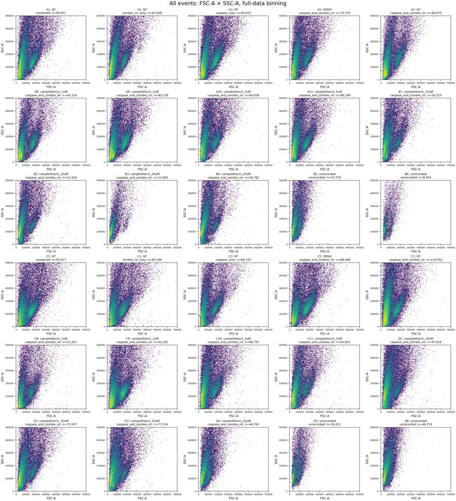
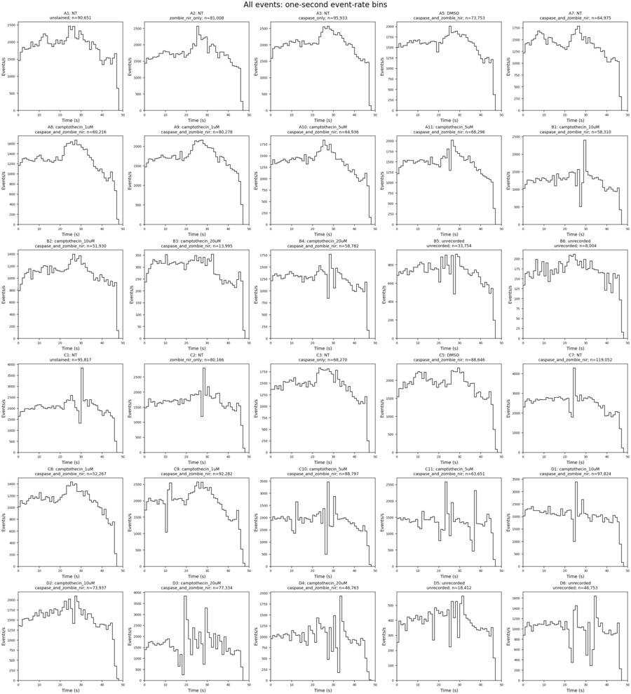
tool call · exec
const r=await Promise.allSettled([tools.view_image({path:"/task/outputs/plots/initial_scatter_log.png"}),tools.view_image({path:"/task/outputs/plots/initial_singlets.png"}),tools.view_image({path:"/task/outputs/plots/initial_fluorescence.png"})]);for(const x of r){if(x.status==="fulfilled")image(x.value.image_url);else text(x.reason)}
text(await tools.write_stdin({session_id:7078,chars:"",yield_time_ms:1000,max_output_tokens:3000}));
tool output
Script completed Wall time 0.1 seconds Output:
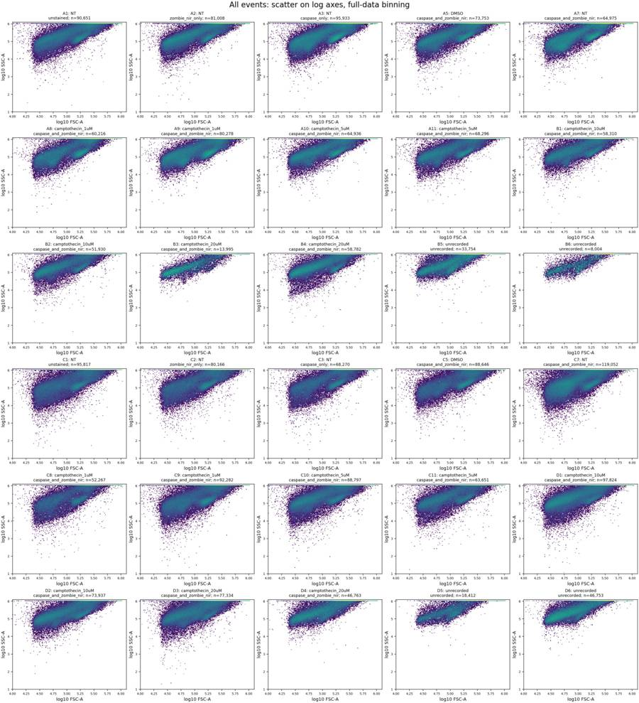
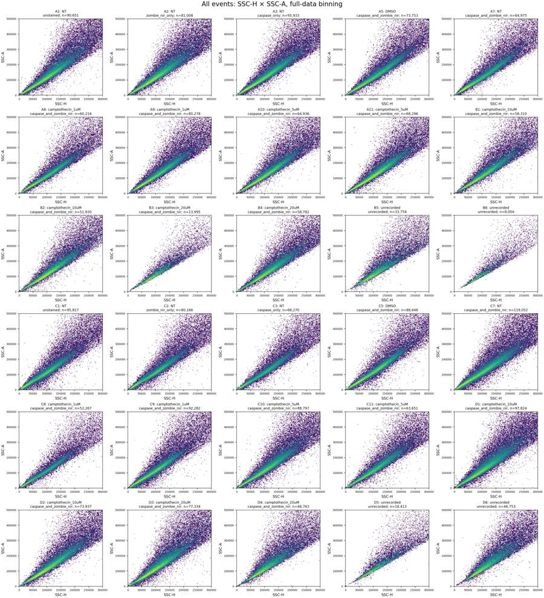
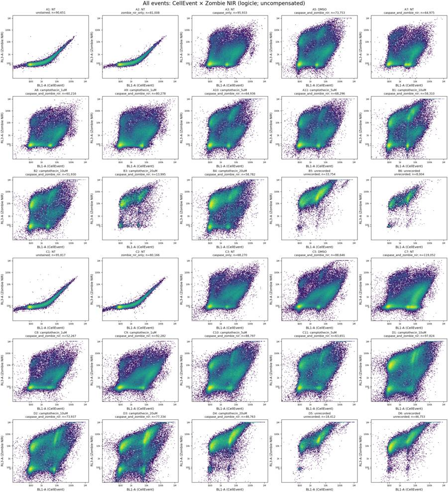
{"chunk_id":"a8b572","wall_time_seconds":0.000003881,"exit_code":0,"original_token_count":1969,"output":"well n t_first t_last max_gap rate_median rate_min rate_max rate_cv empty_seconds vol coincident\n A1 90651 0.016 47.477 0.088 1948.0 645 2468 0.169046 0 159000 4247\n A2 81008 0.015 46.251 0.081 1734.0 279 2572 0.192023 0 155000 3811\n A3 95933 0.014 47.097 0.023 2043.0 143 2574 0.191566 0 157000 5071\n A5 73753 0.014 46.300 0.073 1614.0 377 2011 0.169558 0 155000 4144\n A7 64975 0.015 46.240 0.016 1420.5 294 1788 0.179591 0 155000 3144\n A8 60216 0.013 47.272 0.031 1276.0 101 1669 0.220902 0 158000 2898\n A9 80278 0.014 46.415 0.045 1710.5 511 2161 0.167024 0 155000 3428\n A10 64936 0.014 47.212 0.108 1415.0 157 1844 0.203699 0 158000 2861\n A11 68296 0.013 46.350 0.182 1499.5 384 2022 0.174500 0 155000 3380\n B1 58310 0.014 46.332 0.485 1266.5 417 2405 0.225893 0 155000 2668\n B2 51930 0.015 47.158 0.128 1111.0 131 1401 0.172564 0 158000 1945\n B3 13995 0.016 47.219 0.072 315.0 34 355 0.184731 0 158000 134\n B4 58782 0.014 46.176 0.249 1298.5 171 1774 0.181800 0 155000 1866\n B5 33754 0.015 46.309 0.317 740.5 198 917 0.175715 0 155000 1077\n B6 8004 0.018 47.385 0.101 170.0 16 212 0.191953 0 159000 81\n C1 95817 0.015 46.270 0.243 2026.0 506 3836 0.203791 0 155000 6153\n C2 80166 0.014 47.368 0.257 1703.0 139 2797 0.208814 0 159000 4357\n C3 68270 0.014 46.211 0.112 1483.5 255 1830 0.184112 0 155000 3180\n C5 88646 0.015 47.356 0.048 1913.0 85 2345 0.214629 0 159000 5380\n C7 119052 0.015 47.419 0.104 2651.0 223 4289 0.225431 0 159000 9110\n C8 52267 0.014 46.212 0.077 1144.0 216 1433 0.189433 0 155000 2542\n C9 92282 0.015 47.372 0.140 2027.0 95 2573 0.254974 0 159000 5852\n C10 88797 0.014 47.169 0.334 1928.0 69 3462 0.278050 0 158000 4556\n C11 63651 0.014 46.431 0.359 1367.0 211 2580 0.276196 0 155000 2901\n D1 97824 0.014 47.418 0.258 2083.0 158 3386 0.219913 0 159000 4462\n D2 73937 0.015 47.285 0.119 1601.0 41 2097 0.228042 0 159000 2841\n D3 77334 0.014 46.431 0.289 1610.5 249 3840 0.373081 0 155000 3701\n D4 46763 0.015 47.205 0.297 1021.0 16 1933 0.332932 0 158000 1601\n D5 18412 0.014 46.374 0.310 403.5 150 562 0.195185 0 155000 477\n D6 46753 0.015 46.241 0.357 1055.5 227 1640 0.263284 0 155000 1579\n\nChannel medians and saturation:\nwell FSC-A_q0.5 FSC-A_sat_pct SSC-A_q0.5 SSC-A_sat_pct SSC-H_q0.5 SSC-H_sat_pct BL1-A_q0.5 BL1-A_sat_pct RL3-A_q0.5 RL3-A_sat_pct\n A1 165262.0 4.233820 366981.0 30.421065 236447.0 13.508952 260.0 0.000000 51.0 0.000000\n A2 140256.5 2.876259 307618.5 26.938080 211701.0 10.368112 274.0 0.000000 48.0 0.000000\n A3 152907.0 1.834614 283152.0 26.688418 199436.0 8.490301 1487.0 0.001042 378.0 0.000000\n A5 148191.0 2.146353 318355.0 28.857131 219665.0 10.030778 2033.0 0.000000 1083.0 0.086776\n A7 135213.0 1.100423 273467.0 26.404002 197359.0 7.761447 2422.0 0.000000 413.0 0.003078\n A8 155599.0 1.742062 292519.0 29.442341 209341.5 9.557261 2414.5 0.000000 561.0 0.006643\n A9 147667.0 1.797504 243649.0 24.788859 182317.5 8.456862 1748.5 0.002491 559.0 0.003737\n A10 139795.5 1.921892 277987.5 25.157078 198872.0 8.600776 1595.0 0.001540 1508.5 0.249476\n A11 140793.5 2.944536 279973.5 27.184608 200501.5 9.682851 1628.0 0.002928 1097.0 0.068818\n B1 132368.0 2.198594 319931.0 27.381238 223734.5 9.895387 2176.0 0.001715 3770.0 0.401303\n B2 115674.0 3.229347 277859.0 23.939919 197872.0 9.884460 1001.0 0.005777 4369.0 0.165608\n B3 87213.0 0.607360 209324.0 13.226152 164313.0 3.201143 1067.0 0.000000 14548.0 0.035727\n B4 98737.0 2.303426 247468.0 20.069069 186143.0 8.019462 967.0 0.000000 8421.0 0.180327\n B5 109710.5 0.820643 399359.0 26.497600 272017.5 8.277537 2381.5 0.000000 38241.5 0.811756\n B6 95540.0 0.224888 258838.0 15.442279 193741.0 2.886057 1722.0 0.000000 18375.5 0.074963\n C1 176739.0 5.819427 406050.0 35.862112 262182.0
… [2,047 more characters not shown]tool call · exec
text(await tools.exec_command({cmd:"python - <<'PY'\nimport flowkit as fk, inspect\nprint(inspect.getsource(fk.gates.EllipsoidGate))\nprint(inspect.signature(fk.GatingStrategy.get_gate_hierarchy))\nprint(inspect.getsource(fk.GatingStrategy.gate_sample)[-7000:])\nPY",max_output_tokens:6000}));
text(await tools.view_image({path:"/task/outputs/plots/initial_time_fsc.png"}).then(x=>{image(x.image_url); return "Time versus FSC image opened";}));
tool output
Script completed Wall time 1.2 seconds Output:
{"chunk_id":"e41b57","wall_time_seconds":0.956194882,"exit_code":0,"original_token_count":2090,"output":"class EllipsoidGate(Gate):\n \"\"\"\n Represents a GatingML Ellipsoid Gate\n\n An EllipsoidGate must have at least 2 dimensions, and must specify a mean\n value (center of the ellipsoid), a covariance matrix, and a distance\n square (the square of the Mahalanobis distance).\n \"\"\"\n def __init__(\n self,\n gate_name,\n dimensions,\n coordinates,\n covariance_matrix,\n distance_square\n ):\n \"\"\"\n Create an EllipsoidGate instance.\n\n :param gate_name: text string for the name of the gate\n :param dimensions: list of Dimension instances\n :param coordinates: center point of the ellipsoid for n-dimensions\n :param covariance_matrix: Covariance matrix for the ellipsoid shape (NxN array)\n :param distance_square: square of the Mahalanobis distance, controlling\n the size of the ellipsoid. The distance square parameter is conceptually\n similar to the number of standard deviations representing the boundary\n for an n-dimensional distribution of points.\n \"\"\"\n super().__init__(\n gate_name,\n dimensions\n )\n self.gate_type = \"EllipsoidGate\"\n self.coordinates = coordinates\n self.covariance_matrix = covariance_matrix\n self.distance_square = distance_square\n\n if len(coordinates) == 1:\n raise ValueError(\n 'Ellipsoids must have at least 2 dimensions'\n )\n\n if len(covariance_matrix) != len(self.coordinates):\n raise ValueError(\n 'Covariance row entry value count must match # of dimensions'\n )\n\n def __repr__(self):\n return (\n f'{self.__class__.__name__}('\n f'{self.gate_name}, coords: {self.coordinates})'\n )\n\n def apply(self, df_events):\n \"\"\"\n Apply gate to events in given pandas DataFrame. The given DataFrame must have columns matching the\n Dimension IDs for the Dimension instances defined for the gate.\n\n :param df_events: pandas DataFrame with column labels matching Dimension IDs\n :return: NumPy array of boolean values for each event (True is inside gate)\n \"\"\"\n dim_ids_ordered = []\n for i, dim in enumerate(self.dimensions):\n if isinstance(dim, RatioDimension):\n dim_ids_ordered.append(dim.ratio_ref)\n else:\n dim_ids_ordered.append(dim.id)\n\n results = gating.points_in_ellipsoid(\n self.covariance_matrix,\n self.coordinates,\n self.distance_square,\n df_events[dim_ids_ordered].values # send a NumPy array and not a DataFrame\n )\n\n return results\n\n(self, output='ascii', **kwargs)\n def gate_sample(self, sample, cache_events=False, verbose=False):\n \"\"\"\n Apply GatingStrategy to a Sample instance, returning a GatingResults instance.\n\n :param sample: an FCS Sample instance\n :param cache_events: Whether to cache pre-processed events (compensated and transformed). This can\n be useful to speed up processing of gates that share the same pre-processing instructions for\n the same channel data, but can consume significantly more memory space. See the related\n clear_cache method for additional information. Default is False.\n :param verbose: If True, print a line for each gate processed\n :return: GatingResults instance\n \"\"\"\n sample_id = sample.id\n results = {}\n\n # The goal here is to avoid re-analyzing any gates.\n # For every gate processed, the results will be cached.\n # Since the nodes are retrieved in hierarchy order,\n # we simply check our cached results for the gate's\n # parent results. This should avoid having any gate\n # processed more than once.\n process_order = list(nx.algorithms.topological_sort(self._dag))\n\n process_order.remove(('root',))\n\n for item in process_order:\n # to make the dict key unique, make a string from the ancestors,\n # but also add the set of them as a set to avoid repeated & fragile\n # string splitting in the GatingResults class\n g_id = item[-1]\n g_path = item[:-1]\n gate_path_str = \"/\".join(g_path)\n\n p_id = g_path[-1]\n p_path = g_path[:-1]\n parent_gate_path_str = \"/\".join(p_path)\n\n g_uid = (g_id, gate_path_str)\n p_uid = (p_id, parent_gate_path_str)\n\n # check if this gate has already been processed\n if g_uid in results:\n continue\n\n # get_gate returns QuadrantReferenceError when requesting a single quadrant,\n # we'll check for that. All quadrant sub-gates will get processed with the\n # main QuadrantGate\n try:\n gate = self.get_gate(g_id, g_path, sample_id=sample_id)\n except QuadrantReferenceError:\n continue\n\n if verbose:\n is_custom_gate = self.is_custom_gate(sample_id, g_id, g_path)\n if is_custom_gate:\n custom_gate_str = ' [custom]'\n else:\n custom_gate_str = ''\n\n print(\"%s: processing gate %s%s\" % (sample_id, g_id, custom_gate_str))\n\n # look up parent results\n parent_results = None # default to None\n if p_id != 'root':\n try:\n _ = self.get_gate(p_id, p_path)\n if p_uid in results:\n parent_results = results[p_ui
… [2,701 more characters not shown]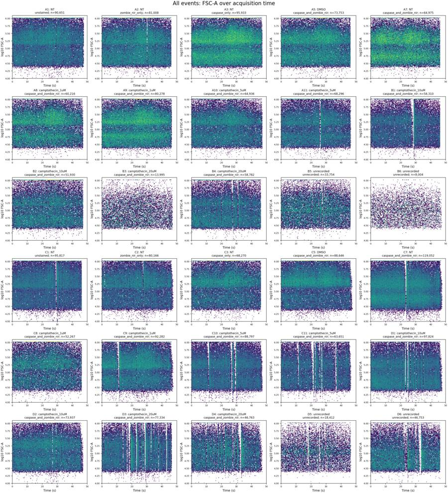
Time versus FSC image opened
12
agent
Two issues need closer review: substantial scatter saturation lies above the main cell cloud, and the nominal single-stain controls don’t fully match their labels. I’ll check how those affect the gated cells before deciding which wells to exclude.
tool call · exec
text(await tools.apply_patch("*** Begin Patch\n*** Add File: /task/outputs/analyze_plate.py\n+\"\"\"Full-event FlowKit 1.2.3 plate analysis; all paths stay under /task.\n+\n+Run: python /task/outputs/analyze_plate.py\n+No compensation, sampling, per-well gates, or time exclusions are applied.\n+\"\"\"\n+from pathlib import Path\n+import json\n+import numpy as np\n+import pandas as pd\n+import flowkit as fk\n+import matplotlib\n+matplotlib.use('Agg')\n+import matplotlib.pyplot as plt\n+from matplotlib.colors import LogNorm\n+\n+ROOT = Path('/task')\n+OUT = ROOT/'outputs'\n+PLOTS = OUT/'plots'\n+POPS = ['Cells','Single_Cells','Live','Caspase_pos']\n+PARENTS = ['all_events','Cells','Single_Cells','Live']\n+CELL_CENTER = [260000.,300000.]\n+CELL_COV = [[210000.**2,.75*210000.*270000.],\n+ [.75*210000.*270000.,270000.**2]]\n+SINGLET_VERTICES = [[10000.,5000.],[600000.,540000.],\n+ [600000.,900000.],[10000.,25000.]]\n+LIVE_MAX = 500.\n+CASPASE_MIN = 1000.\n+\n+def make_strategy():\n+ gs = fk.GatingStrategy()\n+ def dim(c,lo=None,hi=None):\n+ return fk.Dimension(c,compensation_ref='uncompensated',range_min=lo,range_max=hi)\n+ gs.add_gate(fk.gates.EllipsoidGate('Cells',[dim('FSC-A'),dim('SSC-A')],\n+ CELL_CENTER,CELL_COV,1.),('root',))\n+ gs.add_gate(fk.gates.PolygonGate('Single_Cells',[dim('SSC-H'),dim('SSC-A')],\n+ SINGLET_VERTICES),('root','Cells'))\n+ gs.add_gate(fk.gates.RectangleGate('Live',[dim('RL3-A',hi=LIVE_MAX)]),\n+ ('root','Cells','Single_Cells'))\n+ gs.add_gate(fk.gates.RectangleGate('Caspase_pos',[dim('BL1-A',lo=CASPASE_MIN)]),\n+ ('root','Cells','Single_Cells','Live'))\n+ return gs\n+\n+def main():\n+ layout = pd.read_csv(ROOT/'inputs/plate_layout.csv')\n+ strategy = make_strategy()\n+ with open(OUT/'gates.xml','wb') as f:\n+ fk.export_gatingml(strategy,f)\n+ saved = fk.parse_gating_xml(str(OUT/'gates.xml'))\n+ print(saved.get_gate_hierarchy(output='ascii'))\n+ samples = {r.well: fk.Sample(str(ROOT/'inputs/raw'/r.file)) for r in layout.itertuples()}\n+ ix = {c: i for i,c in enumerate(samples['A1'].pnn_labels)}\n+ data = {w:s.get_events(source='raw',subsample=False) for w,s in samples.items()}\n+ results = {w:saved.gate_sample(s) for w,s in samples.items()}\n+ masks = {w:{p:r.get_gate_membership(p) for p in POPS} for w,r in results.items()}\n+ counts=[]\n+ metrics=[]\n+ for row in layout.itertuples():\n+ w=row.well\n+ a=data[w]\n+ r=results[w]\n+ parent_n=len(a)\n+ m={'well':w,'all_events':len(a)}\n+ for p,par in zip(POPS,PARENTS):\n+ n=int(r.get_gate_count(p))\n+ counts.append(dict(file=row.file,well=w,population=p,count=n,\n+ parent_population=par,pct_of_parent=100*n/parent_n if parent_n else 0.))\n+ m[p]=n\n+ m[p+'_pct']=100*n/parent_n if parent_n else 0.\n+ parent_n=n\n+ ss=a[masks[w]['Single_Cells']]\n+ lv=a[masks[w]['Live']]\n+ for c in ['BL1-A','RL3-A']:\n+ for par,arr in [('singlets',ss),('live',lv)]:\n+ for q in [.01,.5,.95,.99,.995,.999]:\n+ m[f'{par}_{c}_q{q}']=np.quantile(arr[:,ix[c]],q) if len(arr) else np.nan\n+ metrics.append(m)\n+ pd.DataFrame(counts).to_csv(OUT/'counts.csv',index=False,float_format='%.10f')\n+ pd.DataFrame(metrics).to_csv(OUT/'gated_metrics.csv',index=False)\n+ print(pd.DataFrame(metrics)[['well']+POPS+[p+'_pct' for p in POPS]].round(3).to_string(index=False))\n+ for w in samples:\n+ original=strategy.gate_sample(samples[w])\n+ for p in POPS:\n+ assert np.array_equal(original.get_gate_membership(p),masks[w][p]), (w,p)\n+ print('XML round-trip: event membership identical in all four populations, all 30 wells.')\n+ print('Fluorescence percentiles in controls:')\n+ print(pd.DataFrame(metrics).set_index('well').loc[['A1','A2','A3','C1','C2','C3']].filter(regex='singlets_|live_').round(1).to_string())\n+\n+ # Ellipse path used only for plotting. Actual counts use FlowKit EllipsoidGate.\n+ theta=np.linspace(0,2*np.pi,361)\n+ ellipse=np.array(CELL_CENTER)[:,None]+np.linalg.cholesky(CELL_COV) @ np.array([np.cos(theta),np.sin(theta)])\n+ poly=np.array(SINGLET_VERTICES+[SINGLET_VERTICES[0]])\n+ lt=fk.transforms.LogicleTransform(1048576,.5,4.5,0)\n+ ticks=np.array([0,1000,10000,100000,1000000])\n+ tp=lt.apply(ticks)\n+ def fluor_axis(ax,axis):\n+ getattr(ax,'set_'+axis+'ticks')(tp,['0','1k','10k','100k','1M'])\n+\n+ def grid(name, draw, title):\n+ fig,axes=plt.subplots(6,5,figsize=(20,22),constrained_layout=True)\n+ for ax,row in zip(axes.flat,layout.itertuples()):\n+ draw(ax,row.well)\n+ ax.set_title(f'{row.well}: {row.treatment}',fontsize=10)\n+ ax.tick_params(labelsize=7)\n+ fig.suptitle(title,fontsize=17)\n+ fig.savefig(PLOTS/name,dpi=140)\n+ plt.close(fig)\n+ def scatter(ax,w):\n+ a=data[w]\n+ ax.hist2d(a[:,ix['FSC-A']],a[:,ix['SSC-A']],bins=(np.linspace(0,1.06e6,180),np.linspace(0,1.06e6,180)),norm=LogNorm(),cmap='viridis',cmin=1)\n+ ax.plot(*ellipse,color='red',lw=1)\n+ ax.set(xlabel='FSC-A',ylabel='SSC-A')\n+ grid('gated_cells.png',scatter,'Cells ellipse on all events; full scale including saturation')\n+ def singlet(ax,w):\n+ a=data[w][masks[w]['Cells']]\n+ ax.hist2d(a[:,ix['SSC-H']],a[:,ix['SSC-A']],bins=(np.linspace(0,6e5,181),np.linspace(0,6e5,181)),norm=LogNorm(),cmap='viridis',cmin=1)\n+ ax.plot(poly[:,0],poly[:,1],color='red',lw=1)\n+ ax.set(xlabel='SSC-H',ylabel='SSC-A')\n+ grid('gated_singlets.png',singlet,'Single_Cells quadrilateral on Cells')\n+ def live(ax,w):\n+ a=data[w][masks[w]['Single_Cells']]\n+ ax.hist2d(lt.apply(a[:,ix['RL3-A']]),a[:,ix['SSC-A']
… [2,040 more characters not shown]tool output
Script completed
Wall time 1.2 seconds
Output:
{}
{"chunk_id":"fb6c42","wall_time_seconds":1.000230435,"session_id":51504,"original_token_count":0,"output":""}tool call · exec
text(await tools.write_stdin({session_id:51504,chars:"",yield_time_ms:1000,max_output_tokens:9000}));
text(await tools.clock__curr_time({}));
tool output
Script completed
Wall time 5.0 seconds
Output:
{"chunk_id":"ccba48","wall_time_seconds":5.001690117,"session_id":51504,"original_token_count":1817,"output":"root\n╰── Cells\n ╰── Single_Cells\n ╰── Live\n ╰── Caspase_pos\nwell Cells Single_Cells Live Caspase_pos Cells_pct Single_Cells_pct Live_pct Caspase_pos_pct\n A1 23275 19734 19714 458 25.675 84.786 99.899 2.323\n A2 19669 16826 16811 398 24.280 85.546 99.911 2.367\n A3 27207 24077 20047 6535 28.360 88.496 83.262 32.598\n A5 18778 16511 11484 3585 25.461 87.927 69.554 31.217\n A7 17822 16011 13311 5921 27.429 89.838 83.137 44.482\n A8 16605 15144 12184 4712 27.576 91.201 80.454 38.674\n A9 25528 23152 17860 7025 31.799 90.693 77.142 39.334\n A10 18374 16183 10423 3244 28.296 88.076 64.407 31.123\n A11 18579 16410 11573 3839 27.204 88.326 70.524 33.172\n B1 14812 13007 7312 2558 25.402 87.814 56.216 34.984\n B2 12049 10552 5958 1537 23.202 87.576 56.463 25.797\n B3 3716 3267 684 275 26.552 87.917 20.937 40.205\n B4 13203 11769 5590 1620 22.461 89.139 47.498 28.980\n B5 6380 5365 94 66 18.901 84.091 1.752 70.213\n B6 2029 1792 92 56 25.350 88.319 5.134 60.870\n C1 25948 21936 21928 82 27.081 84.538 99.964 0.374\n C2 21782 18605 18602 70 27.171 85.415 99.984 0.376\n C3 16606 14604 11748 3091 24.324 87.944 80.444 26.311\n C5 23748 20654 18344 4965 26.790 86.972 88.816 27.066\n C7 27823 24231 21350 10671 23.370 87.090 88.110 49.981\n C8 12457 11187 9292 3570 23.833 89.805 83.061 38.420\n C9 24297 21259 18401 6360 26.329 87.496 86.556 34.563\n C10 20819 17946 12431 3513 23.446 86.200 69.269 28.260\n C11 15678 13690 7647 2707 24.631 87.320 55.858 35.400\n D1 22203 18664 9205 2838 22.697 84.061 49.320 30.831\n D2 20070 17569 8853 2902 27.145 87.539 50.390 32.780\n D3 19192 16047 7567 2508 24.817 83.613 47.155 33.144\n D4 10426 8604 738 250 22.295 82.524 8.577 33.875\n D5 4384 3824 15 9 23.811 87.226 0.392 60.000\n D6 7459 6516 219 166 15.954 87.358 3.361 75.799\nXML round-trip: event membership identical in all four populations, all 30 wells.\nFluorescence percentiles in controls:\n singlets_BL1-A_q0.01 singlets_BL1-A_q0.5 singlets_BL1-A_q0.95 singlets_BL1-A_q0.99 singlets_BL1-A_q0.995 singlets_BL1-A_q0.999 live_BL1-A_q0.01 live_BL1-A_q0.5 live_BL1-A_q0.95 live_BL1-A_q0.99 live_BL1-A_q0.995 live_BL1-A_q0.999 singlets_RL3-A_q0.01 singlets_RL3-A_q0.5 singlets_RL3-A_q0.95 singlets_RL3-A_q0.99 singlets_RL3-A_q0.995 singlets_RL3-A_q0.999 live_RL3-A_q0.01 live_RL3-A_q0.5 live_RL3-A_q0.95 live_RL3-A_q0.99 live_RL3-A_q0.995 live_RL3-A_q0.999\nwell \nA1 -83.0 65.0 574.0 1610.0 2148.3 3786.0 -83.0 65.0 567.0 1545.9 2001.7 3009.9 -111.0 11.0 113.0 227.0 294.0 500.6 -111.0 11.0 112.0 219.0 277.0 393.9\nA2 -73.0 79.0 657.8 1522.0 1954.2 3475.2 -73.0 78.0 652.0 1490.5 1827.8 2618.0 -109.0 12.0 112.0 204.0 266.9 452.1 -109.0 12.0 112.0 196.9 253.0 375.4\nA3 -82.0 246.0 4727.0 8292.4 10604.0 18704.8 -91.0 201.0 4729.5 7748.0 9670.2 16497.6 -160.2 84.0 3717.2 30017.1 39361.4 54991.1 -172.5 55.0 356.0 467.0 482.0 496.0\nC1 -
… [1,493 more characters not shown]tool call · exec
const r=await Promise.allSettled([tools.view_image({path:"/task/outputs/plots/gated_cells.png"}),tools.view_image({path:"/task/outputs/plots/control_boundaries.png"})]);for(const x of r){if(x.status==="fulfilled")image(x.value.image_url);else text(x.reason)}
text(await tools.write_stdin({session_id:51504,chars:"",yield_time_ms:1000,max_output_tokens:1500}));
tool output
Script completed Wall time 0.1 seconds Output:
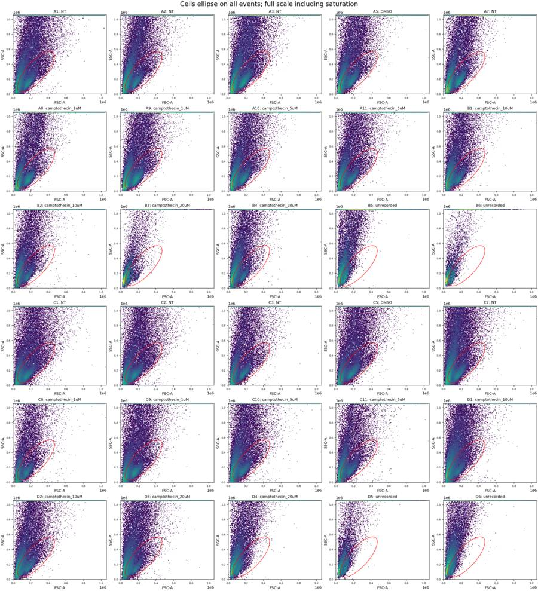
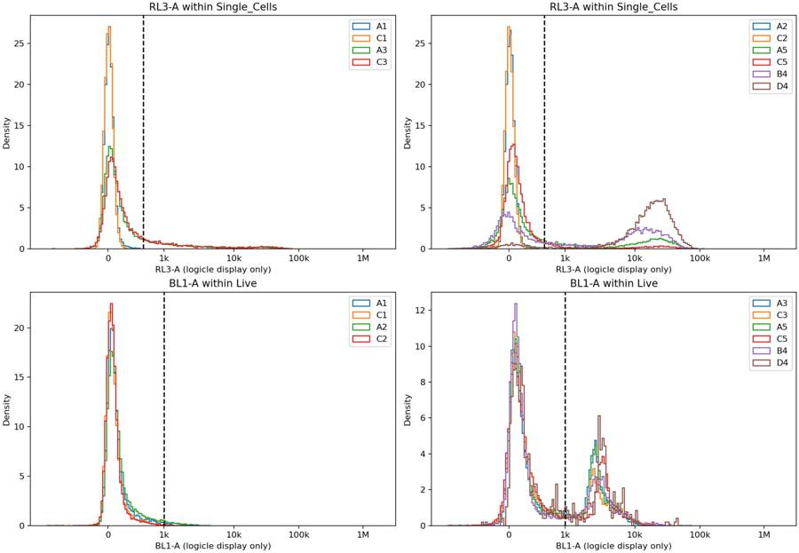
{"chunk_id":"b66d18","wall_time_seconds":0.000003509,"exit_code":0,"original_token_count":0,"output":""}tool call · exec
const r=await Promise.allSettled([tools.view_image({path:"/task/outputs/plots/gated_singlets.png"}),tools.view_image({path:"/task/outputs/plots/gated_live.png"}),tools.view_image({path:"/task/outputs/plots/gated_caspase.png"})]);for(const x of r){if(x.status==="fulfilled")image(x.value.image_url);else text(x.reason)}
tool output
Script completed Wall time 0.1 seconds Output:
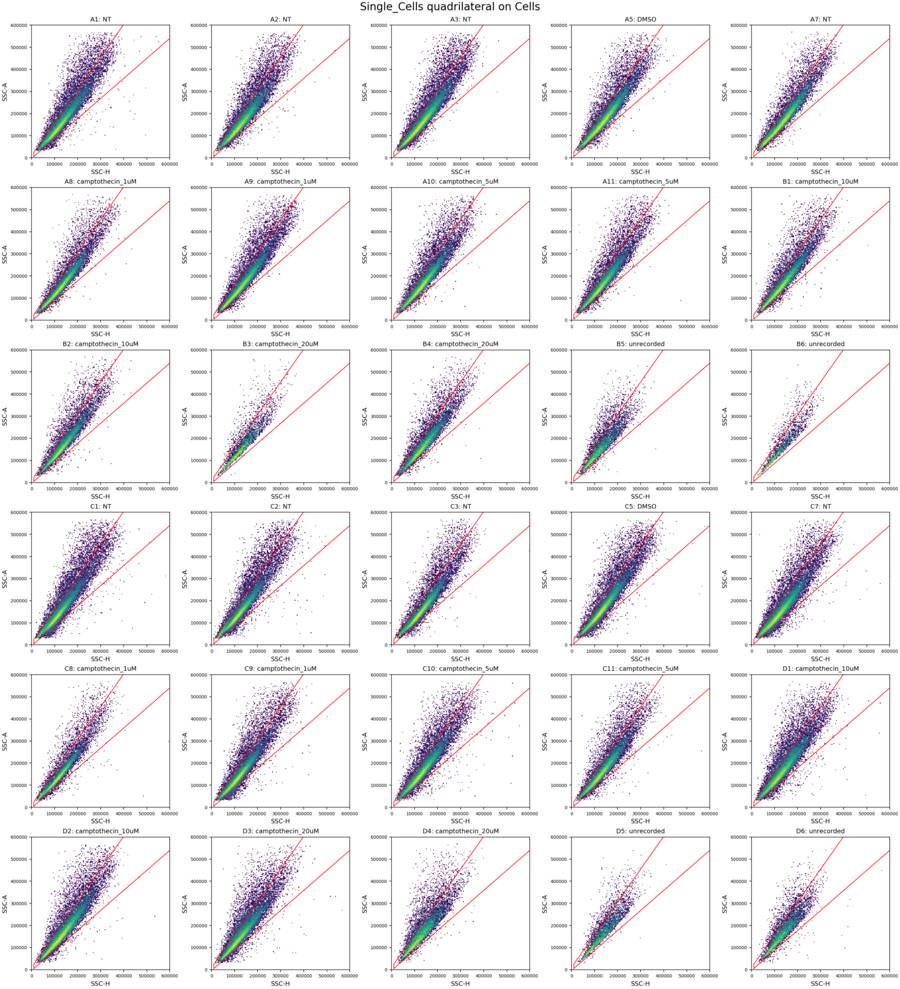
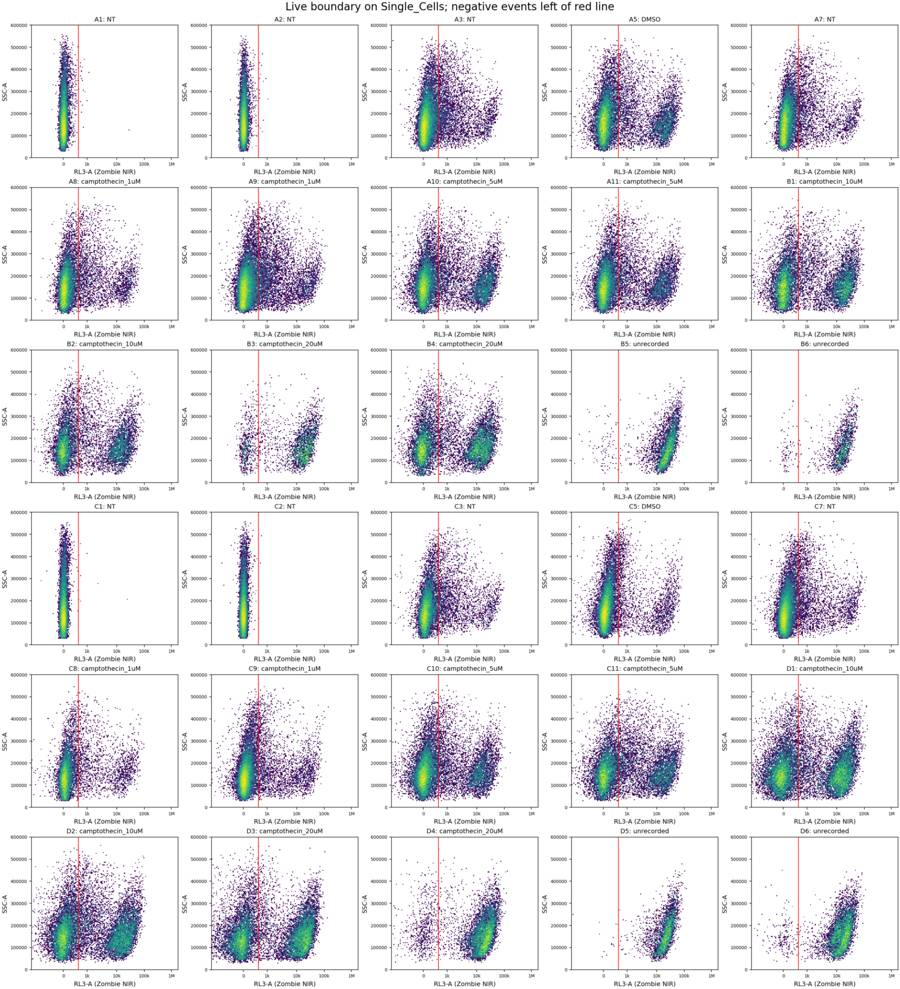
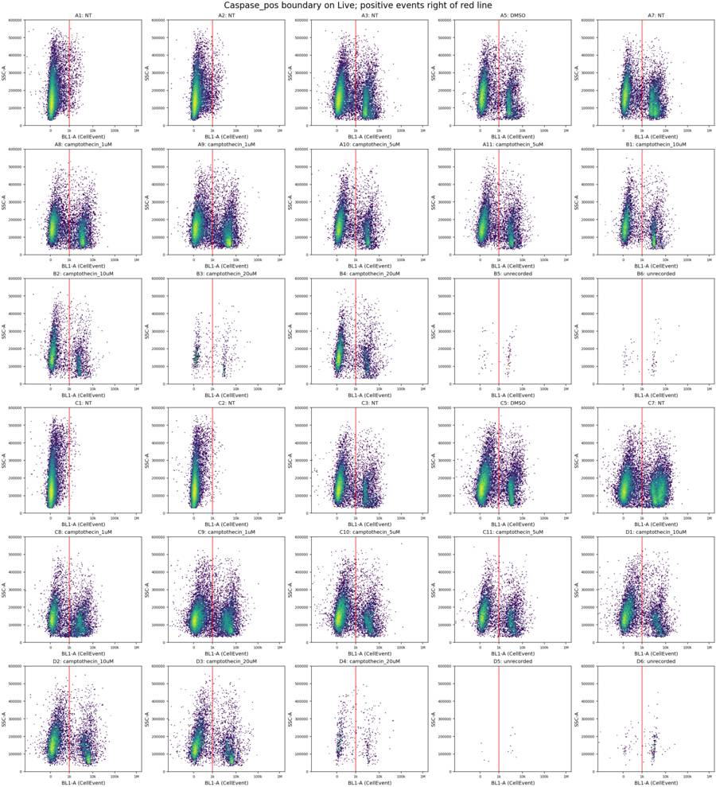
tool call · exec
text(await tools.apply_patch("*** Begin Patch\n*** Update File: /task/outputs/analyze_plate.py\n@@\n-CASPASE_MIN = 1000.\n+CASPASE_MIN = 2000.\n*** Add File: /task/outputs/inspect_qc.py\n+from pathlib import Path\n+import numpy as np\n+import pandas as pd\n+import flowkit as fk\n+from scipy.ndimage import median_filter\n+from scipy.stats import ks_2samp\n+import matplotlib\n+matplotlib.use('Agg')\n+import matplotlib.pyplot as plt\n+from matplotlib.colors import LogNorm\n+from analyze_plate import make_strategy,POPS\n+\n+ROOT=Path('/task')\n+OUT=ROOT/'outputs'\n+layout=pd.read_csv(ROOT/'inputs/plate_layout.csv')\n+samples={r.well:fk.Sample(str(ROOT/'inputs/raw'/r.file)) for r in layout.itertuples()}\n+ix={c:i for i,c in enumerate(samples['A1'].pnn_labels)}\n+data={w:s.get_events(source='raw',subsample=False) for w,s in samples.items()}\n+gs=make_strategy()\n+masks={w:{p:None for p in POPS} for w in samples}\n+for w,s in samples.items():\n+ r=gs.gate_sample(s)\n+ masks[w]={p:r.get_gate_membership(p) for p in POPS}\n+\n+records=[]\n+bin_records=[]\n+traces={}\n+intervals=[]\n+for w,a in data.items():\n+ t=a[:,ix['Time']]\n+ n=len(a)\n+ dt=np.diff(t)\n+ edges=np.arange(0,np.ceil(t.max()*10)/10+.1001,.1)\n+ cnt,_=np.histogram(t,edges)\n+ mids=(edges[1:]+edges[:-1])/2\n+ baseline=median_filter(cnt.astype(float),size=31,mode='nearest')\n+ interior=(mids>=1)&(mids<=t.max()-2)\n+ low=(cnt < .2*baseline)&interior\n+ low50=(cnt < .5*baseline)&interior\n+ spikes=(cnt>2.5*baseline)&interior\n+ lowix=np.flatnonzero(low)\n+ lowix50=np.flatnonzero(low50)\n+ groups=np.split(lowix,np.where(np.diff(lowix)>1)[0]+1) if len(lowix) else []\n+ groups50=np.split(lowix50,np.where(np.diff(lowix50)>1)[0]+1) if len(lowix50) else []\n+ long=[g for g in groups50 if len(g)>=2]\n+ for g in long:\n+ intervals.append(dict(well=w,start_s=edges[g[0]],end_s=edges[g[-1]+1],\n+ n=int(cnt[g].sum()),local_expected_n=float(baseline[g].sum()),\n+ fraction_of_expected=float(cnt[g].sum()/baseline[g].sum())))\n+ stable=interior&~low50&~spikes\n+ cv=np.std(cnt[interior])/np.mean(cnt[interior])\n+ m=dict(well=w,n=n,rate_01s_cv=cv,max_gap=dt.max(),max_gap_start=t[np.argmax(dt)],\n+ longest_low20_s=max((len(g)*.1 for g in groups),default=0),low20_total_s=low.sum()*.1,\n+ low50_total_s=low50.sum()*.1,n_low50_intervals_02s=len(long),\n+ low50_lost_est=sum((baseline[g]-cnt[g]).sum() for g in groups50),\n+ spike_total_s=spikes.sum()*.1,\n+ max_spike_ratio=(cnt[interior]/np.maximum(1,baseline[interior])).max())\n+ m['low50_lost_pct']=100*m['low50_lost_est']/n\n+ # Full-scale clipping must be evaluated in the analytical parents as well as all events.\n+ for p in ['all_events']+POPS:\n+ mask=np.ones(n,dtype=bool) if p=='all_events' else masks[w][p]\n+ for c in ['FSC-A','SSC-A','SSC-H','BL1-A','RL3-A']:\n+ m[f'{p}_{c}_sat_pct']=100*np.mean(a[mask,ix[c]]>=1048575) if mask.any() else np.nan\n+ # Counts and phenotype stability in 5-second bins (last partial bin omitted for comparisons).\n+ e5=np.arange(0,50.01,5)\n+ c5={p:np.histogram(t[masks[w][p]],e5)[0] for p in POPS}\n+ c5['all_events']=np.histogram(t,e5)[0]\n+ traces[w]=(edges,cnt,baseline,low50,spikes,c5)\n+ for i in range(len(e5)-1):\n+ z=dict(well=w,start_s=e5[i],end_s=e5[i+1])\n+ z.update({p:int(c5[p][i]) for p in ['all_events']+POPS})\n+ for p,par in zip(POPS,['all_events']+POPS[:-1]):\n+ z[p+'_pct']=100*c5[p][i]/c5[par][i] if c5[par][i] else np.nan\n+ bin_records.append(z)\n+ # Terminal flow vs central run; end-of-run ramp-down is shared across plate.\n+ for st,en in [(1,10),(10,20),(20,30),(30,40),(40,44),(44,45),(45,46),(46,47)]:\n+ m[f'rate_{st}_{en}']=np.sum((t>=st)&(t<en))/(en-st)\n+ records.append(m)\n+df=pd.DataFrame(records)\n+df.to_csv(OUT/'detailed_qc_metrics.csv',index=False)\n+pd.DataFrame(bin_records).to_csv(OUT/'time_bin_counts.csv',index=False)\n+pd.DataFrame(intervals).to_csv(OUT/'flow_interruptions.csv',index=False)\n+print(df[['well','rate_01s_cv','max_gap','max_gap_start','low20_total_s','longest_low20_s','low50_total_s','n_low50_intervals_02s','low50_lost_pct','spike_total_s','max_spike_ratio']].round(3).to_string(index=False))\n+print('\\nFlow intervals:')\n+print(pd.DataFrame(intervals).round(3).to_string(index=False))\n+print('\\nGate clipping percent:')\n+print(df[['well']+[f'{p}_{c}_sat_pct' for p in ['Cells','Single_Cells','Live'] for c in ['FSC-A','SSC-A','SSC-H','BL1-A','RL3-A']]].round(3).to_string(index=False))\n+\n+fig,axes=plt.subplots(6,5,figsize=(20,22),constrained_layout=True)\n+for ax,w in zip(axes.flat,data):\n+ edges,cnt,base,low,spikes,c5=traces[w]\n+ mids=(edges[1:]+edges[:-1])/2\n+ ax.stairs(cnt/.1,edges,lw=.8,color='black')\n+ ax.plot(mids,base/.1,lw=1,color='blue')\n+ ax.scatter(mids[low],cnt[low]/.1,s=7,c='red')\n+ ax.set(title=w,xlabel='Time (s)',ylabel='Events/s (0.1-s bins)',xlim=(0,48))\n+ ax.tick_params(labelsize=7)\n+fig.suptitle('Flow QC: black = rate; blue = 3.1-s local median; red = <50% local median (interior)',fontsize=15)\n+fig.savefig(OUT/'plots/flow_qc_100ms.png',dpi=150)\n+plt.close(fig)\n+\n+fig,axes=plt.subplots(6,5,figsize=(20,22),constrained_layout=True)\n+for ax,w in zip(axes.flat,data):\n+ c=traces[w][-1]\n+ for p,par,col in [('Cells','all_events','gray'),('Single_Cells','Cells','blue'),('Live','Single_Cells','green'),('Caspase_pos','Live','purple')]:\n+ pct=np.divide(100*c[p],c[par],out=np.full(len(c[p]),np.nan),where=c[par]>0)\n+ ax.plot(np.arange(2.5,50,5),pct,'o-',ms=3,lw=1,color=col,label=p)\n+ ax.set(title=w,xlabel='Time (s)',ylabel='% of parent in 5-s bins',ylim=(0,100),xlim=(0,48))\n+ ax.tick_params(labelsize=7)\n+axes[0,0].legend(fontsize=6)\n+fig.suptitle('Phenotype stability over time
… [1,158 more characters not shown]tool output
Script completed
Wall time 1.2 seconds
Output:
{}
{"chunk_id":"e2f892","wall_time_seconds":1.001140858,"session_id":26386,"original_token_count":0,"output":""}tool call · exec
text(await tools.exec_command({cmd:"python -u /task/outputs/analyze_plate.py",yield_time_ms:1000,max_output_tokens:5000}));
text(await tools.write_stdin({session_id:26386,chars:"",yield_time_ms:1000,max_output_tokens:14000}));
tool output
Script completed
Wall time 1.2 seconds
Output:
{"chunk_id":"2902f3","wall_time_seconds":1.001684998,"session_id":60608,"original_token_count":0,"output":""}
{"chunk_id":"c2c6e2","wall_time_seconds":0.000002624,"exit_code":0,"original_token_count":6573,"output":"well rate_01s_cv max_gap max_gap_start low20_total_s longest_low20_s low50_total_s n_low50_intervals_02s low50_lost_pct spike_total_s max_spike_ratio\n A1 0.300 0.088 29.579 0.2 0.2 1.3 2 2.190 0.0 1.950\n A2 0.309 0.081 15.382 0.7 0.2 1.7 1 2.934 0.0 2.099\n A3 0.189 0.023 44.922 0.1 0.1 0.1 0 0.205 0.0 1.900\n A5 0.233 0.073 26.996 0.3 0.1 0.7 1 1.372 0.0 1.703\n A7 0.159 0.016 13.365 0.0 0.0 0.0 0 0.000 0.0 1.406\n A8 0.228 0.031 36.945 0.0 0.0 0.4 0 0.639 0.0 1.679\n A9 0.179 0.045 16.950 0.0 0.0 0.3 0 0.421 0.0 1.756\n A10 0.269 0.108 23.682 0.2 0.1 1.2 2 1.988 0.0 2.462\n A11 0.286 0.182 25.961 0.6 0.5 0.9 1 1.773 0.0 2.349\n B1 0.466 0.485 28.314 1.4 0.5 3.3 8 4.900 0.7 6.076\n B2 0.320 0.128 22.482 0.8 0.2 2.4 1 3.805 0.1 2.693\n B3 0.220 0.072 19.537 0.0 0.0 0.1 0 0.143 0.0 1.920\n B4 0.339 0.249 27.665 1.1 0.4 1.9 3 3.314 0.3 3.483\n B5 0.324 0.317 27.534 0.9 0.3 1.9 4 3.286 0.0 2.398\n B6 0.263 0.101 47.023 0.0 0.0 0.5 0 0.562 0.0 2.333\n C1 0.454 0.243 29.275 1.7 0.5 4.6 5 7.745 0.1 2.685\n C2 0.406 0.257 27.583 1.1 0.3 3.9 3 6.596 0.2 2.780\n C3 0.346 0.112 25.040 0.5 0.1 2.9 2 4.421 0.0 1.968\n C5 0.312 0.048 16.725 0.3 0.2 1.9 1 3.145 0.0 2.355\n C7 0.370 0.104 23.579 0.8 0.4 2.6 3 3.703 0.3 4.728\n C8 0.341 0.077 17.004 0.6 0.1 2.6 2 4.353 0.0 2.105\n C9 0.425 0.140 23.129 1.3 0.7 3.0 4 4.610 0.4 4.579\n C10 0.497 0.334 26.764 2.3 0.6 4.4 7 7.405 1.3 4.781\n C11 0.501 0.359 21.153 2.8 0.6 5.0 6 7.814 1.0 6.970\n D1 0.465 0.258 23.193 3.0 0.4 5.6 12 9.682 0.3 3.626\n D2 0.370 0.119 26.790 1.1 0.2 2.9 6 4.876 0.2 2.970\n D3 0.686 0.289 43.034 4.0 0.5 8.1 20 11.709 2.2 6.932\n D4 0.444 0.297 32.639 1.4 0.6 4.1 9 5.861 0.6 3.868\n D5 0.445 0.310 18.119 1.5 0.4 2.8 8 5.035 0.6 4.667\n D6 0.480 0.357 33.399 1.7 0.4 4.0 9 4.519 1.6 7.388\n\nFlow intervals:\nwell start_s end_s n local_expected_n fraction_of_expected\n A1 29.4 29.7 134 672.0 0.199\n A1 32.3 32.5 173 408.0 0.424\n A2 30.0 30.3 102 616.0 0.166\n A5 26.9 27.1 72 384.0 0.188\n A10 17.0 17.2 103 285.0 0.361\n A10 23.6 23.8 36 334.0 0.108\n A11 25.8 26.3 59 854.0 0.069\n B1 9.2 9.4 86 259.0 0.332\n B1 15.8 16.1 13 396.0 0.033\n B1 20.6 20.8 73 268.0 0.272\n
… [20,757 more characters not shown]18
agent
The shared gates and per-well counts are saved, and the XML reload reproduces every gated event exactly. No retained cell is saturated in the gate channels. I’m now assessing repeated flow interruptions and the small Live populations in B5, B6, D5 and D6.
tool call · exec
const r=await Promise.allSettled([tools.view_image({path:"/task/outputs/plots/flow_qc_100ms.png"}),tools.view_image({path:"/task/outputs/plots/phenotype_over_time.png"})]);for(const x of r){if(x.status==="fulfilled")image(x.value.image_url);else text(x.reason)}
text(await tools.write_stdin({session_id:60608,chars:"",yield_time_ms:1000,max_output_tokens:2000}));
tool output
Script completed Wall time 0.1 seconds Output:
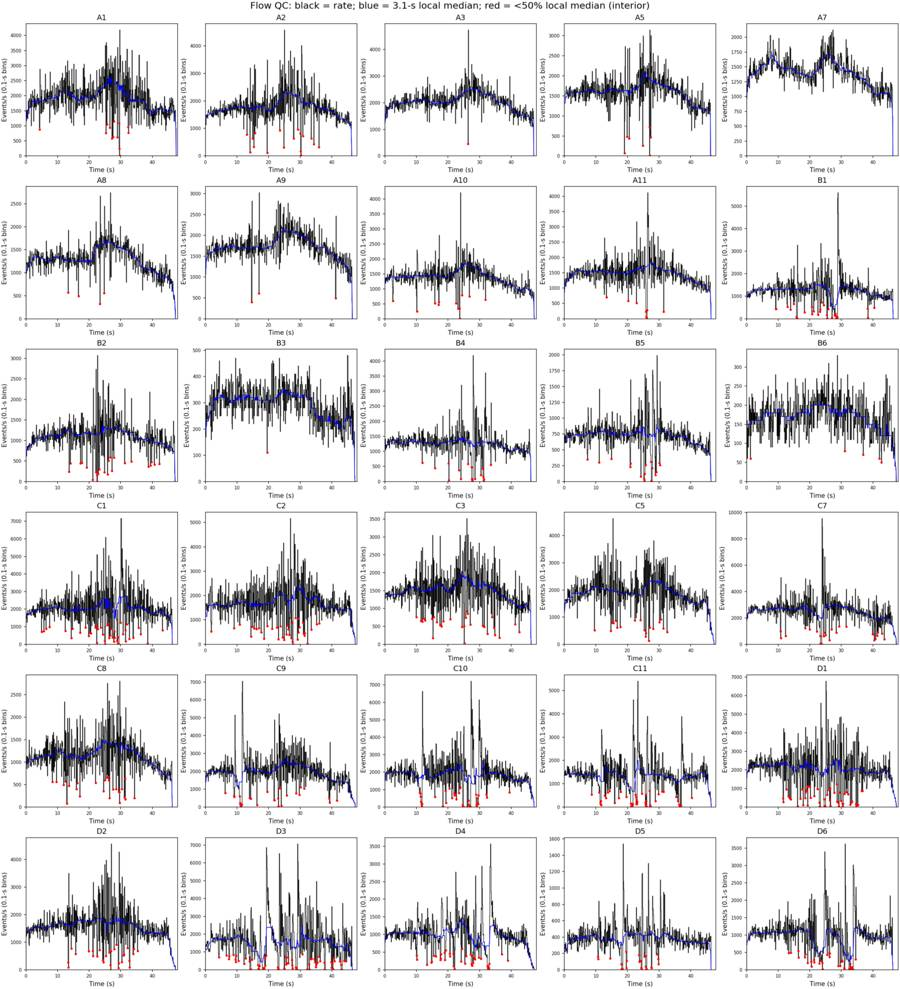
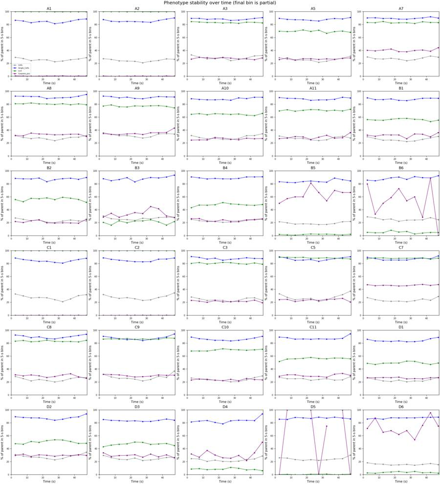
{"chunk_id":"9380f6","wall_time_seconds":0.000004807,"exit_code":0,"original_token_count":1817,"output":"root\n╰── Cells\n ╰── Single_Cells\n ╰── Live\n ╰── Caspase_pos\nwell Cells Single_Cells Live Caspase_pos Cells_pct Single_Cells_pct Live_pct Caspase_pos_pct\n A1 23275 19734 19714 99 25.675 84.786 99.899 0.502\n A2 19669 16826 16811 63 24.280 85.546 99.911 0.375\n A3 27207 24077 20047 5568 28.360 88.496 83.262 27.775\n A5 18778 16511 11484 3085 25.461 87.927 69.554 26.863\n A7 17822 16011 13311 5310 27.429 89.838 83.137 39.892\n A8 16605 15144 12184 4036 27.576 91.201 80.454 33.125\n A9 25528 23152 17860 6209 31.799 90.693 77.142 34.765\n A10 18374 16183 10423 2732 28.296 88.076 64.407 26.211\n A11 18579 16410 11573 3316 27.204 88.326 70.524 28.653\n B1 14812 13007 7312 2328 25.402 87.814 56.216 31.838\n B2 12049 10552 5958 1256 23.202 87.576 56.463 21.081\n B3 3716 3267 684 235 26.552 87.917 20.937 34.357\n B4 13203 11769 5590 1346 22.461 89.139 47.498 24.079\n B5 6380 5365 94 60 18.901 84.091 1.752 63.830\n B6 2029 1792 92 53 25.350 88.319 5.134 57.609\n C1 25948 21936 21928 5 27.081 84.538 99.964 0.023\n C2 21782 18605 18602 9 27.171 85.415 99.984 0.048\n C3 16606 14604 11748 2554 24.324 87.944 80.444 21.740\n C5 23748 20654 18344 4388 26.790 86.972 88.816 23.921\n C7 27823 24231 21350 9918 23.370 87.090 88.110 46.454\n C8 12457 11187 9292 2767 23.833 89.805 83.061 29.778\n C9 24297 21259 18401 5538 26.329 87.496 86.556 30.096\n C10 20819 17946 12431 2930 23.446 86.200 69.269 23.570\n C11 15678 13690 7647 2296 24.631 87.320 55.858 30.025\n D1 22203 18664 9205 2417 22.697 84.061 49.320 26.257\n D2 20070 17569 8853 2639 27.145 87.539 50.390 29.809\n D3 19192 16047 7567 2253 24.817 83.613 47.155 29.774\n D4 10426 8604 738 217 22.295 82.524 8.577 29.404\n D5 4384 3824 15 9 23.811 87.226 0.392 60.000\n D6 7459 6516 219 155 15.954 87.358 3.361 70.776\nXML round-trip: event membership identical in all four populations, all 30 wells.\nFluorescence percentiles in controls:\n singlets_BL1-A_q0.01 singlets_BL1-A_q0.5 singlets_BL1-A_q0.95 singlets_BL1-A_q0.99 singlets_BL1-A_q0.995 singlets_BL1-A_q0.999 live_BL1-A_q0.01 live_BL1-A_q0.5 live_BL1-A_q0.95 live_BL1-A_q0.99 live_BL1-A_q0.995 live_BL1-A_q0.999 singlets_RL3-A_q0.01 singlets_RL3-A_q0.5 singlets_RL3-A_q0.95 singlets_RL3-A_q0.99 singlets_RL3-A_q0.995 singlets_RL3-A_q0.999 live_RL3-A_q0.01 live_RL3-A_q0.5 live_RL3-A_q0.95 live_RL3-A_q0.99 live_RL3-A_q0.995 live_RL3-A_q0.999\nwell \nA1 -83.0 65.0 574.0 1610.0 2148.3 3786.0 -83.0 65.0 567.0 1545.9 2001.7 3009.9 -111.0 11.0 113.0 227.0 294.0 500.6 -111.0 11.0 112.0 219.0 277.0 393.9\nA2 -73.0 79.0 657.8 1522.0 1954.2 3475.2 -73.0 78.0 652.0 1490.5 1827.8 2618.0 -109.0 12.0 112.0 204.0 266.9 452.1 -109.0 12.0 112.0 196.9 253.0 375.4\nA3 -82.0 246.0 4727.0 8292.4 10604.0 18704.8 -91.0 201.0 4729.5 7748.0 9670.2 16497.6 -160.2 84.0 3717.2 30017.1 39361.4 54991.1 -172.5 55.0 356.0 467.0 482.0 496.0\nC1 -94.0 45.0 305.0
… [1,397 more characters not shown]tool call · exec
text(await tools.apply_patch("*** Begin Patch\n*** Add File: /task/outputs/finalize_qc.py\n+\"\"\"Write the final flag table, concise notes, and an independent validation record.\n+\n+Run after analyze_plate.py and inspect_qc.py. The CSVs from those scripts are\n+diagnostic measurements; no events are removed or regated during QC.\n+\"\"\"\n+from pathlib import Path\n+import hashlib\n+import json\n+import re\n+import numpy as np\n+import pandas as pd\n+import flowkit as fk\n+from lxml import etree\n+\n+ROOT=Path('/task')\n+OUT=ROOT/'outputs'\n+layout=pd.read_csv(ROOT/'inputs/plate_layout.csv')\n+counts=pd.read_csv(OUT/'counts.csv')\n+qc=pd.read_csv(OUT/'detailed_qc_metrics.csv').set_index('well')\n+initial=pd.read_csv(OUT/'initial_qc_metrics.csv').set_index('well')\n+gated=pd.read_csv(OUT/'gated_metrics.csv').set_index('well')\n+ctrl=pd.read_csv(OUT/'control_qc_metrics.csv').set_index('well')\n+intervals=pd.read_csv(OUT/'flow_interruptions.csv')\n+\n+# These are analysis-specific review thresholds, not universal assay standards.\n+MIN_LIVE=500 # worst-case binomial 95% half-width approximately 4.4 percentage points\n+FLOW_CV=.40\n+FLOW_LOW20_SECONDS=1.0\n+BAD_CONTROLS={'A2','C2','A3','C3'}\n+\n+def flow_evidence(w):\n+ q=qc.loc[w]\n+ ints=intervals[intervals.well==w].copy()\n+ ints['deficit']=ints.local_expected_n-ints.n\n+ z=ints.sort_values('deficit',ascending=False).iloc[0]\n+ duration=z.end_s-z.start_s\n+ return (\n+ f'Interior 0.1-s event-rate CV={q.rate_01s_cv:.3f}; '\n+ f'{q.low20_total_s:.1f} s below 20% of the 3.1-s local median; '\n+ f'{int(q.n_low50_intervals_02s)} intervals of at least 0.2 s below 50% of local median. '\n+ f'At {z.start_s:.1f}-{z.end_s:.1f} s: {int(z.n)} events '\n+ f'({z.n/duration:.0f}/s) versus local baseline {z.local_expected_n/duration:.0f}/s; '\n+ f'maximum inter-event gap {q.max_gap:.3f} s at {q.max_gap_start:.3f} s; '\n+ f'largest interior 0.1-s burst {q.max_spike_ratio:.2f}x local median.'\n+ )\n+\n+flags=[]\n+for row in layout.itertuples():\n+ w=row.well\n+ q=qc.loc[w]\n+ g=gated.loc[w]\n+ severe_flow=(q.rate_01s_cv>=FLOW_CV and q.low20_total_s>=FLOW_LOW20_SECONDS)\n+ too_few=g.Live<MIN_LIVE\n+ count_text=f'all_events={int(g.all_events)}; Cells={int(g.Cells)}; Single_Cells={int(g.Single_Cells)}; Live={int(g.Live)}'\n+ cat='ok'\n+ usable='yes'\n+ if w in BAD_CONTROLS:\n+ usable='no'\n+ cat='bad_control'\n+ c=ctrl.loc[w]\n+ if w in ['A2','C2']:\n+ ref='A1' if w=='A2' else 'C1'\n+ both='A7' if w=='A2' else 'C7'\n+ evidence=(\n+ f'{count_text}. Nominal Zombie-only control has no verifiable Zombie-bright population: '\n+ f'Single_Cells RL3-A median={c[\"RL3-A_med\"]:.0f} versus {ref} unstained '\n+ f'{ctrl.loc[ref,\"RL3-A_med\"]:.0f}; KS distance={c[\"RL3-A_ks_vs_unstained\"]:.4f}; '\n+ f'0/{int(c.n)} singlets at RL3-A>=5000, versus '\n+ f'{ctrl.loc[both,\"RL3_ge_5000\"]:.2f}% in {both} NT/both dyes. '\n+ 'Stain identity cannot be validated; absence of a positive population alone does not prove mislabeling.'\n+ )\n+ confidence='medium'\n+ else:\n+ ref='A1' if w=='A3' else 'C1'\n+ evidence=(\n+ f'{count_text}. Nominal caspase-only (Zombie-negative) control has '\n+ f'{c.RL3_ge_500:.2f}% of singlets at RL3-A>=500 and '\n+ f'{c.RL3_ge_5000:.2f}% at RL3-A>=5000, versus '\n+ f'{ctrl.loc[ref,\"RL3_ge_5000\"]:.4f}% at >=5000 in {ref}. '\n+ f'{int(c.RL3_ge5000_and_BL1_lt1000)} singlets are RL3-A>=5000 despite BL1-A<1000 '\n+ f'(of {int(c.n_BL1_lt1000)} BL1-low singlets); unexpected independent NIR-bright population '\n+ 'makes the whole well invalid as a Zombie-negative control.'\n+ )\n+ confidence='high'\n+ if severe_flow:\n+ evidence+=' Additional flow failure: '+flow_evidence(w)\n+ evidence+=f' confidence={confidence}'\n+ elif too_few:\n+ usable='no'\n+ cat='too_few_events'\n+ confidence='high' if g.Live<100 else 'medium'\n+ halfwidth=1.96*np.sqrt(.25/g.Live)*100\n+ evidence=(\n+ f'{count_text}; Caspase_pos={int(g.Caspase_pos)}. Live denominator below the '\n+ f'{MIN_LIVE}-event precision criterion ({100*g.Live/g.Single_Cells:.3f}% of singlets); '\n+ f'worst-case binomial 95% half-width approximately {halfwidth:.1f} percentage points. '\n+ f'Time spans {initial.loc[w,\"t_first\"]:.3f}-{initial.loc[w,\"t_last\"]:.3f} s; '\n+ f'median complete-bin rate {initial.loc[w,\"rate_median\"]:.0f}/s.'\n+ )\n+ if severe_flow:\n+ evidence+=' Additional flow failure: '+flow_evidence(w)\n+ else:\n+ evidence+=' No terminal cessation supporting a ran-dry diagnosis.'\n+ evidence+=f' confidence={confidence}'\n+ elif severe_flow:\n+ usable='no'\n+ cat='clog_or_interrupted_flow'\n+ confidence='medium' if w in ['C1','C9'] else 'high'\n+ evidence=(f'{count_text}. '+flow_evidence(w)+\n+ ' Repeated interruptions and recoveries make full-run event yield unreliable; '\n+ f'the physical cause cannot be determined from FCS alone. confidence={confidence}')\n+ else:\n+ evidence=(\n+ f'{count_text}; Caspase_pos={int(g.Caspase_pos)}. '\n+ f'Interior 0.1-s rate CV={q.rate_01s_cv:.3f}; {q.low20_total_s:.1f} s below 20% of local median; '\n+ 'passes the stated flow and Live-denominator criteria. '\n+ f'SSC-A ceiling pile-up {initial.loc[w,\"SSC-A_sat_pct\"]:.2f}% of all events; '\n+ '0% clipping in Cells/Single_Cells/Live in all gate channels.'\n+ )\n+ if w=='B3':\n+
… [7,850 more characters not shown]tool output
Script completed
Wall time 1.2 seconds
Output:
{}
{"chunk_id":"1b3e11","wall_time_seconds":1.000759419,"session_id":97719,"original_token_count":287,"output":"well usable reason_category\n A1 yes ok\n A2 no bad_control\n A3 no bad_control\n A5 yes ok\n A7 yes ok\n A8 yes ok\n A9 yes ok\n A10 yes ok\n A11 yes ok\n B1 no clog_or_interrupted_flow\n B2 yes ok\n B3 yes ok\n B4 yes ok\n B5 no too_few_events\n B6 no too_few_events\n C1 no clog_or_interrupted_flow\n C2 no bad_control\n C3 no bad_control\n C5 yes ok\n C7 yes ok\n C8 yes ok\n C9 no clog_or_interrupted_flow\n C10 no clog_or_interrupted_flow\n C11 no clog_or_interrupted_flow\n D1 no clog_or_interrupted_flow\n D2 yes ok\n D3 no clog_or_interrupted_flow\n D4 no clog_or_interrupted_flow\n D5 no too_few_events\n D6 no too_few_events\n"}tool call · exec
text(await tools.write_stdin({session_id:97719,chars:"",yield_time_ms:1000,max_output_tokens:4000}));
text(await tools.exec_command({cmd:"wc -w /task/outputs/notes.md\ncat /task/outputs/gates.xml\npython - <<'PY'\nimport pandas as pd\np=pd.read_csv('/task/outputs/flags.csv')\nfor r in p[p.usable=='no'].itertuples():\n print(r.well,r.reason_category,r.evidence)\nPY",max_output_tokens:10000}));
text(await tools.clock__curr_time({}));
tool output
Script completed
Wall time 0.3 seconds
Output:
{"chunk_id":"510a74","wall_time_seconds":0.000003832,"exit_code":0,"original_token_count":17,"output":"PASS: 30 wells; 120 count rows; 30 flag rows; 437 words in notes.\n"}
{"chunk_id":"b65c8e","wall_time_seconds":0.147658028,"exit_code":0,"original_token_count":2747,"output":"437 /task/outputs/notes.md\n<?xml version='1.0' encoding='UTF-8'?>\n<gating:Gating-ML xmlns:gating=\"http://www.isac-net.org/std/Gating-ML/v2.0/gating\" xmlns:data-type=\"http://www.isac-net.org/std/Gating-ML/v2.0/datatypes\" xmlns:transforms=\"http://www.isac-net.org/std/Gating-ML/v2.0/transformations\">\n <gating:EllipsoidGate gating:id=\"Cells\">\n <gating:dimension gating:compensation-ref=\"uncompensated\">\n <data-type:fcs-dimension data-type:name=\"FSC-A\"/>\n </gating:dimension>\n <gating:dimension gating:compensation-ref=\"uncompensated\">\n <data-type:fcs-dimension data-type:name=\"SSC-A\"/>\n </gating:dimension>\n <gating:mean>\n <gating:coordinate data-type:value=\"260000.0\"/>\n <gating:coordinate data-type:value=\"300000.0\"/>\n </gating:mean>\n <gating:covarianceMatrix>\n <gating:row>\n <gating:entry data-type:value=\"44100000000.0\"/>\n <gating:entry data-type:value=\"42525000000.0\"/>\n </gating:row>\n <gating:row>\n <gating:entry data-type:value=\"42525000000.0\"/>\n <gating:entry data-type:value=\"72900000000.0\"/>\n </gating:row>\n </gating:covarianceMatrix>\n <gating:distanceSquare data-type:value=\"1.0\"/>\n </gating:EllipsoidGate>\n <gating:PolygonGate gating:id=\"Single_Cells\" gating:parent_id=\"Cells\">\n <gating:dimension gating:compensation-ref=\"uncompensated\">\n <data-type:fcs-dimension data-type:name=\"SSC-H\"/>\n </gating:dimension>\n <gating:dimension gating:compensation-ref=\"uncompensated\">\n <data-type:fcs-dimension data-type:name=\"SSC-A\"/>\n </gating:dimension>\n <gating:vertex>\n <gating:coordinate data-type:value=\"10000.0\"/>\n <gating:coordinate data-type:value=\"5000.0\"/>\n </gating:vertex>\n <gating:vertex>\n <gating:coordinate data-type:value=\"600000.0\"/>\n <gating:coordinate data-type:value=\"540000.0\"/>\n </gating:vertex>\n <gating:vertex>\n <gating:coordinate data-type:value=\"600000.0\"/>\n <gating:coordinate data-type:value=\"900000.0\"/>\n </gating:vertex>\n <gating:vertex>\n <gating:coordinate data-type:value=\"10000.0\"/>\n <gating:coordinate data-type:value=\"25000.0\"/>\n </gating:vertex>\n </gating:PolygonGate>\n <gating:RectangleGate gating:id=\"Live\" gating:parent_id=\"Single_Cells\">\n <gating:dimension gating:compensation-ref=\"uncompensated\" gating:max=\"500.0\">\n <data-type:fcs-dimension data-type:name=\"RL3-A\"/>\n </gating:dimension>\n </gating:RectangleGate>\n <gating:RectangleGate gating:id=\"Caspase_pos\" gating:parent_id=\"Live\">\n <gating:dimension gating:compensation-ref=\"uncompensated\" gating:min=\"2000.0\">\n <data-type:fcs-dimension data-type:name=\"BL1-A\"/>\n </gating:dimension>\n </gating:RectangleGate>\n</gating:Gating-ML>\nA2 bad_control all_events=81008; Cells=19669; Single_Cells=16826; Live=16811. Nominal Zombie-only control has no verifiable Zombie-bright population: Single_Cells RL3-A median=12 versus A1 unstained 11; KS distance=0.0136; 0/16826 singlets at RL3-A>=5000, versus 5.13% in A7 NT/both dyes. Stain identity cannot be validated; absence of a positive population alone does not prove mislabeling. confidence=medium\nA3 bad_control all_events=95933; Cells=27207; Single_Cells=24077; Live=20047. Nominal caspase-only (Zombie-negative) control has 16.74% of singlets at RL3-A>=500 and 4.22% at RL3-A>=5000, versus 0.0051% at >=5000 in A1. 552 singlets are RL3-A>=5000 despite BL1-A<1000 (of 16268 BL1-low singlets); unexpected independent NIR-bright population makes the whole well invalid as a Zombie-negative control. confidence=high\nB1 clog_or_interrupted_flow all_events=58310; Cells=14812; Single_Cells=13007; Live=7312. Interior 0.1-s event-rate CV=0.466; 1.4 s below 20% of the 3.1-s local median; 8 intervals of at least 0.2 s below 50% of local median. At 28.1-28.8 s: 43 events (61/s) versus local baseline 701/s; maximum inter-event gap 0.485 s at 28.314 s; largest interior 0.1-s burst 6.08x local median. Repeated interruptions and recoveries make full-run event yield unreliable; the physical cause cannot be determined from FCS alone. confidence=high\nB5 too_few_events all_events=33754; Cells=6380; Single_Cells=5365; Live=94; Caspase_pos=60. Live denominator below the 500-event precision criterion (1.752% of singlets); worst-case binomial 95% half-width approximately 10.1 percentage points. Time spans 0.015-46.309 s; median complete-bin rate 740/s. No terminal cessation supporting a ran-dry diagnosis. confidence=high\nB6 too_few_events all_events=8004; Cells=2029; Single_Cells=1792; Live=92; Caspase_pos=53. Live denominator below the 500-event precision criterion (5.134% of singlets); worst-case binomial 95% half-width approximately 10.2 percentage points. Time spans 0.018-47.385 s; median complete-bin rate 170/s. No terminal cessation supporting a ran-dry diagnosis. confidence=high\nC1 clog_or_interrupted_flow all_events=95817; Cells=25948; Single_Cells=21936; Live=21928. Interior 0.1-s event-rate CV=0.454; 1.7 s below 20% of the 3.1-s local median; 5 intervals of at least 0.2 s below 50% of local median. At 29.0-29.5 s: 47 events (94/s) versus local baseline 2404/s; maximum inter-event gap 0.243 s at 29.275 s; largest interior 0.1-s burst 2.69x local median. Repeated interruptions and recoveries make full-run event yield unreliable; the physical cause cannot be determined from FCS alone. confidence=medium\nC2 bad_control all_events=80166; Cells=21782; Single_Cells=18605; Live=18602. Nominal Zombie-only control has no verifiable Zombie-bright population: Single_Cells
… [5,511 more characters not shown]21
agent
Completed all 30 wells with one shared gate set. Exported 120 count rows; 16 wells flagged unusable with numeric evidence and confidence. Reloaded XML reproduces all counts.
- [gates.xml](/task/outputs/gates.xml)
- [counts.csv](/task/outputs/counts.csv)
- [flags.csv](/task/outputs/flags.csv)
- [notes.md](/task/outputs/notes.md)